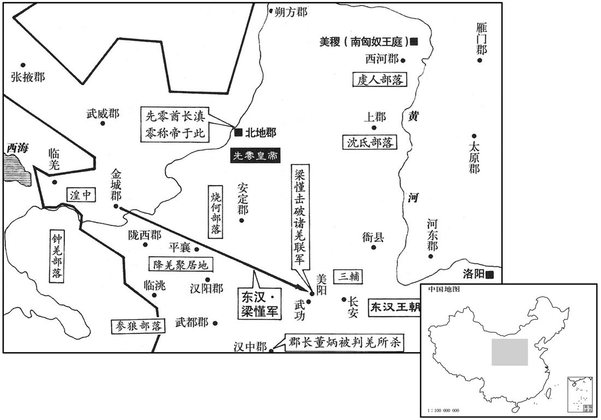
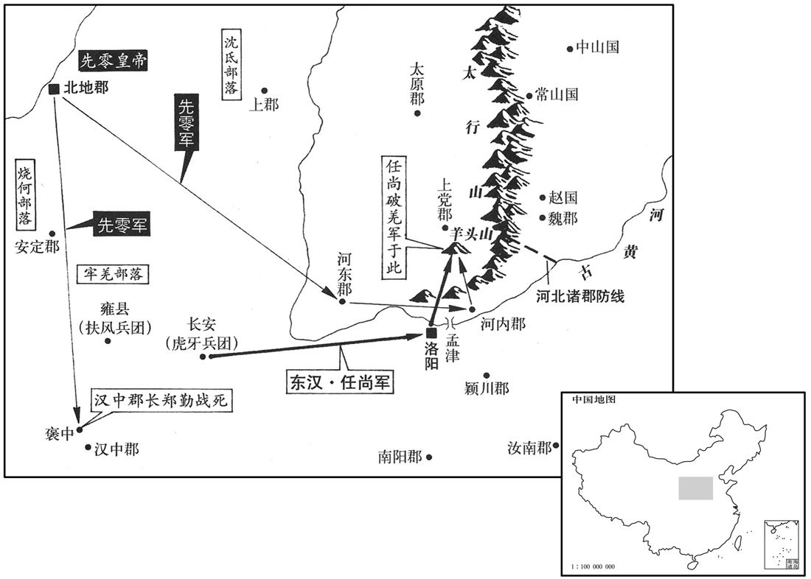
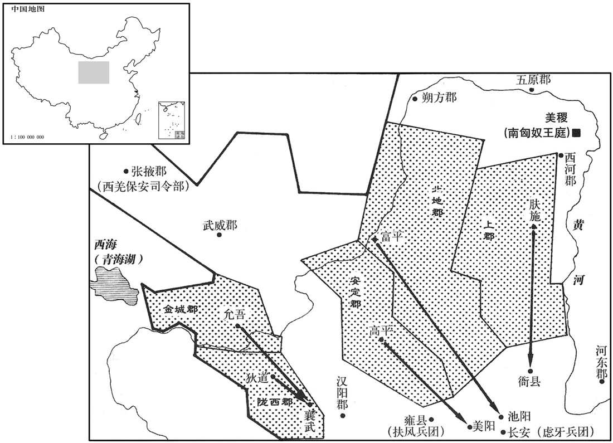
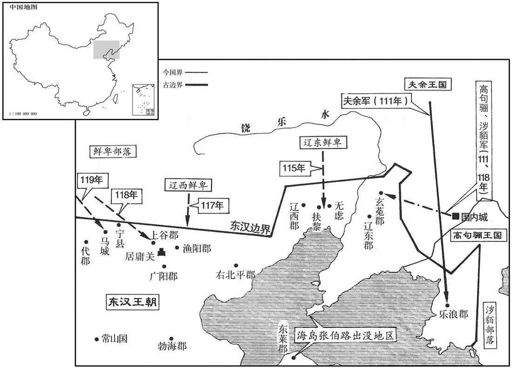
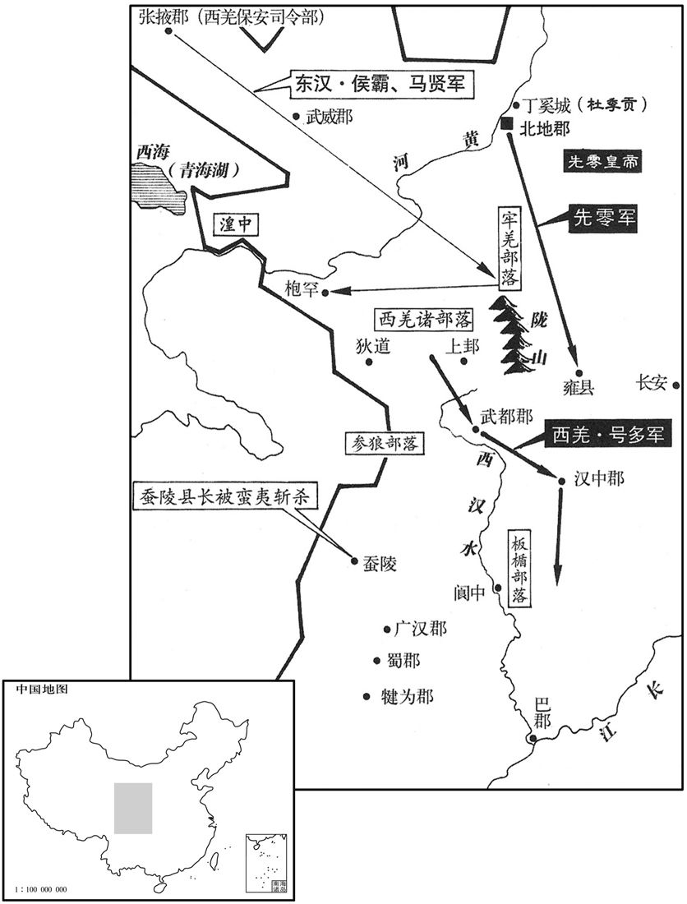
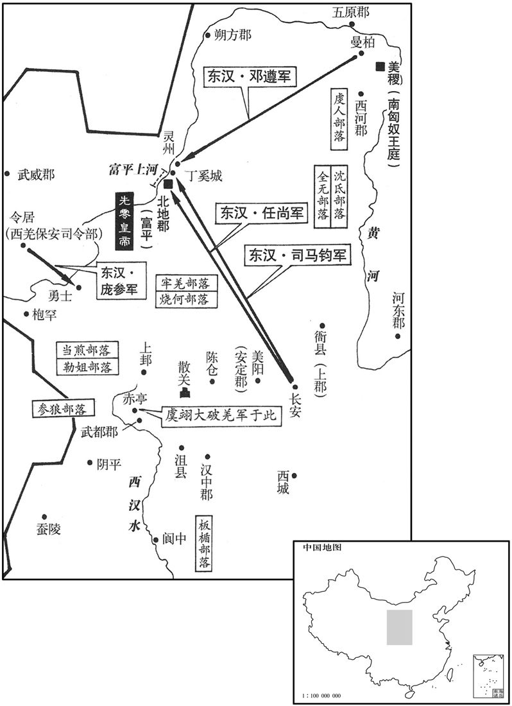
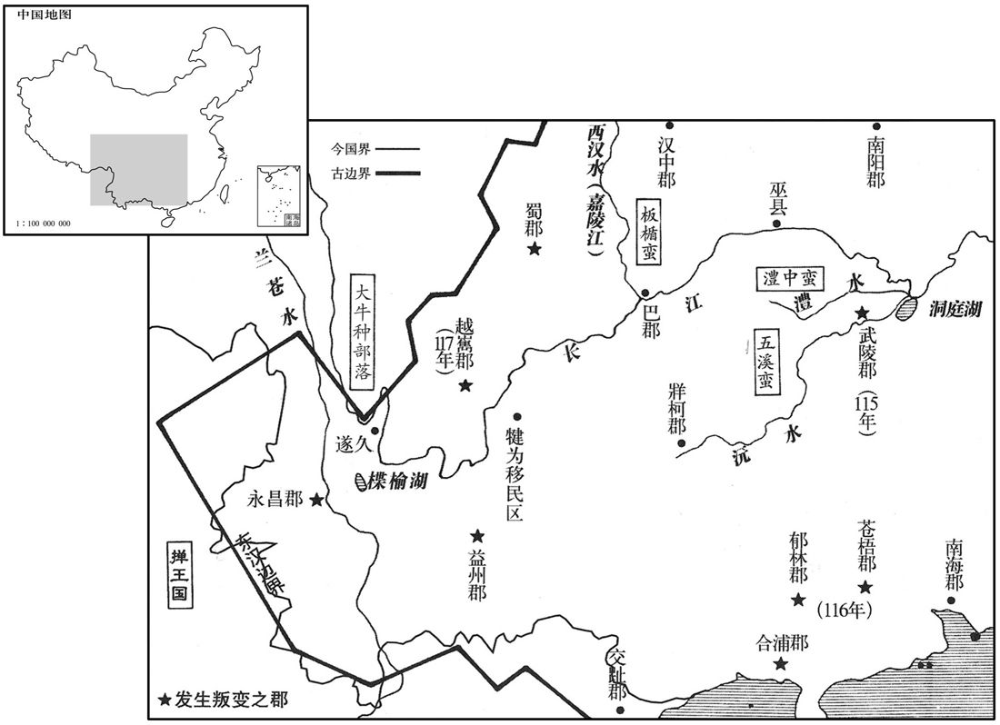

卷次与人物目录 / 卷49
资治通鉴 · 卷第四十九【汉纪四十一】
公元106年至公元115年 · 原文、白话与胡三省注
本页按胡注本编排保存全卷内容。白话采用本站所据译本，未可靠对应的内容另列说明；事件标题用于定位，并非原书文字。
本卷共150段原文，150段有译文对应，0段缺译或待核对。
卷第四十九【汉纪四十一】起柔兆敦牂（丙午），尽旃蒙单阏（乙卯），凡十年。
卷首原文与注释
孝殇皇帝〔讳隆，和帝少子也。谥法：短折不成曰殇。伏侯古今注曰：「隆」之字曰「盛」。〕
公元106年 · 汉孝殇皇帝延平元年
延平元年〔（丙午、一○六）〕
本年事件索引（现代整理）
春，正月，辛卯，以太尉张禹为太傅，司徒徐防为太尉，参录尚书事。太后以帝在襁褓，〔襁，居两翻。褓，音保。〕欲令重臣居禁内。乃诏禹舍宫中，五日一归府；每朝见，特赞，与三公绝席。〔特赞者，每朝见，赞拜者先独赞禹名，既乃赞太尉名以下，禹火与三公同赞也。绝席者，朝位独在百僚上，不与三公联席也。朝，直遥翻。见，贤遍翻。〕
春季，正月辛卯（十三日），将太尉张禹任命为太傅，将司徒徐防任命为太尉，参与主管尚书事务。邓太后因皇帝是个婴孩，尚在襁褓怀抱之中，打算让重要的大臣住在宫内，于是下诏，命张禹留居宫中，每五天回家一次；每逢朝见，都专门为他唱名，让他单独就座，不与三公同席。
封皇兄胜为平原王。
将皇兄刘胜封为平原王。
癸卯，以光禄勋梁鲔为司徒。〔鲔，于轨翻。〕
正月癸卯（二十五日），将光禄勋梁鲔任命为司徒。
三月，甲申，葬孝和皇帝于慎陵，〔贤曰：慎陵，在雒阳东南三十里。〕庙曰穆宗。
三月甲申（初七），将和帝安葬在慎陵，庙号称为穆宗。
丙戌，清河王庆、济北王寿、河间王开、常山王章始就国；〔济，子礼翻。〕太后特加庆以殊礼。〔殊，异也，其礼异于诸王也。〕庆子祜，年十三，太后以帝幼弱，远虑不虞，留祜与嫡母耿姬居清河邸。〔为帝崩立祜张本。〕耿姬，况之曾孙也；〔耿况以上谷从光武。〕祜母，犍为左姬也。〔犍，居言翻。〕
丙戌（初九），清河王刘庆、济北王刘寿、河间王刘开、常山王刘章从此前往封国就位。邓太后对刘庆特别优待，礼遇超过其他亲王。刘庆的儿子刘祜，当时十三岁，邓太后因皇帝幼小单弱，担心将来发生不测，就让刘祜和他的嫡母耿姬留下，住在清河国设在京城的官邸。耿姬是耿的曾孙女。刘祜的生母是犍为人左姬。
夏，四月，鲜卑寇渔阳，渔阳太守张显率数百人出塞追之。兵马掾严授谏曰：「前道险阻，贼势难量，〔掾，俞绢翻。量，音良。〕宜且结营，先令轻骑侦视之。」显意甚锐，怒，欲斩之，遂进兵。遇虏伏发，士卒悉走，唯授力战，身被十创，手杀数人而死。〔缘边郡曹有兵马掾，掌兵马。侦，丑郑翻。创，初良翻。〕主簿卫福、功曹徐咸皆自投赴显，俱没于陈。〔陈，读曰阵。〕
夏季，四月，鲜卑侵犯渔阳。渔阳太守张显率领数百人出塞追击。兵马掾严授劝谏道：“前方道路险恶而阻碍重重，敌人的实力难以估量，我军应暂且安营扎寨，先命轻装骑兵进行侦察。”张显锐气正盛，听后大怒，要将严授处斩。于是汉军向前挺进。途中遇到鲜卑军伏兵袭击，汉军全部逃散，唯独严授奋力迎战，身受十处创伤，亲手格杀数人后战死。渔阳郡主簿卫福、郡功曹徐咸二人自动赶来营救张显，一同阵亡。
丙寅，以虎贲中郎将邓骘为车骑将军、仪同三司。〔三司，三公也。晋职官志曰：仪同三司之名始此。骘，职日翻。〕骘弟黄门侍郎悝为虎贲中郎将，弘、阊皆侍中。〔悝，苦回翻。阊，齿良翻。〕
丙寅（十九日），将虎贲中郎将邓骘任命为车骑将军、仪同三司，待遇与三公相同。将邓骘的弟弟、黄门侍郎邓悝任命为虎贲中郎将，邓弘、邓阊二人皆为侍中。
司空陈宠薨。
司空陈宠去世。
五月，辛卯，赦天下。
五月辛卯（十五日），大赦天下。
壬辰，河东垣山崩。〔贤曰：垣县，今绛州县也。〕
壬辰（十六日），河东郡垣山发生山崩。
六月，丁未，以太常尹勤为司空。
六月丁未（初一），将太常尹勤任命为司空。
郡国三十一雨水。
两版字句有差异，建议核对原文。
有三十七个郡和封国大雨成灾。
己未，太后诏减太官、导官、尚方、内署诸服御、珍膳、靡丽难成之物，〔贤曰：太官令，周官也，秩千石，典天子御膳。导官，掌择御米。导，择也。尚方，掌作御刀剑诸器物；内署，掌内府衣物：令秩皆六百石。〕自非供陵庙，稻梁米不得导择，朝夕一肉饭而已。旧太官、汤官经用岁且二万万，自是裁数千万。〔百官志：汤官丞，主酒，属太官令。〕及郡国所贡，皆减其过半；悉斥卖上林鹰犬；〔东部亦有上林苑，在雒阳西。斥，开也，弃也。〕离宫、别馆储峙米糒、薪炭，悉令省之。〔峙，丈里翻。糒，音备。〕
六月已未（十三日），邓太后下诏，削减太官、导官、尚方、内署的各种御用衣服车马、珍羞美味，和各色奢靡富丽精巧难成的物品。除非供奉皇陵祠庙，否则稻谷粱米不得加工精选，每日早晚只吃一次肉食。以往太官、汤官的费用每年将近二万万钱，至此才数千万钱。连同各郡、各封国的贡物，都削减一半以上。将上林苑的猎鹰、猎犬全部卖掉。各地离宫、别馆所储备的存米、干粮、薪柴、木炭，也一律下令减少。
丁卯，诏免遣掖庭宫人及宗室没入者皆为庶民。
六月丁卯（二十一日），下诏遣散掖庭部分宫人，并将罚入掖庭当奴婢的皇族成员一律免罪，使他们成为平民。
秋，七月，庚寅，敕司隶校尉、部刺史曰：〔司隶校尉及诸州部刺史也。〕「间者郡国或有水灾，妨害秋稼，朝廷惟咎，忧惶悼惧。〔惟，思也。咎，过也。〕而郡国欲获丰穰虎饰之誉，遂覆蔽灾害，〔覆，敷又翻。〕多张垦田，不揣流亡，〔揣，音初委翻。〕竞增户口，掩匿盗贼，令奸恶无惩，〔隐蔽盗贼，不以上闻，弗加诛讨，使奸恶无所惩艾。〕署用非次，选举乖宜，贪苛惨毒，延及平民。〔贤曰：平民，谓善人也。〕刺史垂头塞耳，阿私下比，〔塞悉则翻。比，毗至翻。〕不畏于天，不愧于人。〔诗小雅何人斯之辞。〕假贷之恩，不可数恃，〔数，所角翻。〕自今以后，将纠其罚。二千不长吏其各实核所伤害，为除田租刍。」〔长，知两翻。为，于伪翻。〕
秋季，七月庚寅（十五日），敕令司隶校尉和部刺史：“近来有些郡和封国发生水灾，伤害了秋天的庄稼，朝廷思考自己的过失，深为忧虑惶恐。然而各地方官府为了要得到丰产的虚名假誉，便隐瞒灾情，夸大垦田面积；不去统计逃亡人数，却竞相增加户口；掩盖盗匪活动情况，使罪犯得不到惩处；不依照规定次序任用官吏，举荐人才不当，将贪婪苛刻的祸害，加在人民的身上。而刺史却低头塞耳，循私包庇，在下面互相勾结，不知畏惧上天，也不知愧对于人。不能让他们一再地仗恃朝廷的宽容恩典，从今以后，将加重对不法官员的处罚。现命令二千石官员各自核查百姓受灾情况，免除他们应向国家交付的田赋禾秆。”
八月，辛卯，帝崩。〔年二岁。〕癸丑，殡于崇德前殿。〔贤曰：雒阳南宫有崇德殿。〕太后与兄车骑将军骘、虎贲中郎将悝等定策禁中，〔悝，苦回翻。〕其夜，使骘持节以王青盖车迎清河王子祜，〔贤曰：续汉志曰：皇太子、皇子，皆安车，朱班轮、青盖、金华蚤。皇子为王，锡以乘之，故曰王青盖车。皇孙则绿车。〕斋于殿中。皇太后御崇德殿，百官皆吉服陪位，〔贤曰：不可以凶事临朝，改吉服也。〕引拜祜为长安侯。〔贤曰：不即立为天子而封侯者，不欲从微即登皇位。余谓先封侯者，用立孝宣帝故事也。〕乃下诏，以祜为孝和皇帝嗣，又作策命。有司读策毕，太尉奉上玺绶，即皇帝位，〔上，时掌翻。玺，斯氏翻。绶，音受。〕太后犹临朝。〔公羊传曰：犹者，可止之辞。〕
八月辛卯（疑误），皇帝驾崩。癸丑（初八），将皇帝入殓后，灵柩停放在崇德前殿。邓太后与她的哥哥车骑将军邓骘、虎贲中郎将邓悝等在宫中商议大计，决定了继位人选。当夜，派邓骘持符节，用已封王的皇子才能乘坐的青盖车将清河王的儿子刘祜接来，在殿中斋戒。皇太后登上崇德殿，文武百官都穿上吉服陪同出席。刘祜被引导上殿，皇太后将他封为长安侯。随即下诏，将刘祜立为和帝的后嗣。接着又撰写了册立皇帝的诏命。有关官员宣读完诏令，太尉献上皇帝的御玺，刘祜便正式即位。邓太后仍旧临朝摄政。
诏告司隶校尉、河南尹、南阳太守曰：「每览前代，外戚宾客浊乱奉公，〔言其挟势恣横，奉公之吏为所浊乱也。〕为民患苦，咎在执法怠懈，不辄行其罚故也。〔懈，古隘翻。〕今车骑将军骘等虽怀敬顺之志，而宗门广大，姻戚不少，宾客奸猾，多干禁宪，〔贤曰：干，犯也。〕其明加检敕，勿相容护。」自是亲属犯罪，无所假贷。
邓太后对司隶校尉、河南尹、南阳太守下诏说：“每每查阅前代史事，看到皇后家族及其宾客仗势横行，使奉公而不徇私情的官员陷于混乱，给人民带来痛苦，这是由于执法不严，没有立即施行惩罚的缘故。如今车骑将军邓骘等虽然怀有恭敬顺从的心意，但家族庞大，亲戚不少，宾客奸诈狡猾，对国家的法律禁令多有冒犯。现命令对邓氏家族的不法行为要公开地加以检束，不许包容袒护。”从此以后，邓氏家族亲属犯罪，官员都不予以宽免。
九月，六州大水。
九月，有六个州发生水灾。
丙寅，葬孝殇皇帝于康陵。〔贤曰：康陵，在慎陵茔中庚地。〕以连遭大水，〔【章：甲十六行本「水」作「忧」；乙十一行本同；孔本同；退斋校同。】〕百姓苦役，方中秘藏〔贤曰：方中，陵中也；耱藏之中，故言秘也。孔颍达曰：凡天子之葬，掘地为方圹，汉书谓之方中。方中之内，先累㩗于其方中，南面为羡道，以蜃车载柩至圹，说而载以龙輴，从羡道而入，至方中，乃属绋于棺之缄，从上而下棺，入于㩗之中。方上，谓覆坑方石上。〕及诸工作事，减约十分居一。〔十分居一者，减其九分也。〕
丙寅（疑误），将殇帝安葬于康陵。因国家接连遭受水灾，人民苦于徭役，所以陵墓中的随葬之物及各项工程都予以裁减，只留十分之一。
乙亥，殒石于陈留。〔陈留郡，在雒阳东五百三十里。〕
乙亥（初一），陈留郡天降陨石。
诏以北地梁慬为西域副校尉。〔慬，音勤。校，户教翻。〕慬行至河西，会西域诸国反，攻都护任尚于疏勒；尚上书求救，诏慬将河西四郡羌、胡五千骑驰赴之。慬未至而尚已得解，诏征尚还，以骑都尉段禧为都护，西域长史赵博为骑都尉。禧、博守它干城，〔班超为都护，居龟兹它干城。〕城小，梁慬以为不可固，乃谲说龟兹王白霸，〔谲，古穴翻。说，输芮翻。龟兹，音丘慈。〕欲入共保其城；白霸许之，吏民固谏，白霸不听。慬既入，遣将急迎段禧、赵博，合军八九千人。龟兹吏民并叛其王，而与温宿、姑墨数万兵反，共围成，慬等出战，大破之。连兵数月，胡众败走，乘胜追击，凡斩首万余级，获生口数千人，龟兹乃定。〔梁慬非不健，然终不能定西域者，徒勇而无策略也。〕
朝廷任命北地人梁为西域副校尉。梁到达河西时，恰逢西域各国背叛了汉朝，在疏勒向西域都护任尚发动进攻。任尚上书朝廷求救，朝廷便命令梁率领河西四郡��敦煌、武威、酒泉、张掖的羌、胡骑兵五千人急速前去救援。梁还没有到达，任尚已经解围。朝廷将任尚召回，任命骑都尉段禧为西域都护，任命西域长史赵博为骑都尉。段禧和赵博据守在它乾城。它乾城是个小城，梁认为不能固守，于是用诈术游说龟兹王白霸，声称愿意进入龟兹，和他共同守城。白霸同意了梁的建议。龟兹的官员和百姓极力进行劝阻，但白霸不听。梁进入龟兹城以后，派将领急速前去迎接段禧和赵博，汉军汇合为八九千人。龟兹的官员和百姓一同背叛了龟兹王，与温宿、姑墨两国联合造反，军队达数万人，一同围攻龟兹城。梁等出城迎战，大破联军。战争持续了数月，联军兵败退走。梁乘胜追击，共斩杀一万余人，生擒数千人，龟兹局势才告平定。
冬，十月，四州大水，雨雹。〔雨，于具翻。〕
冬季，十月，有四个州发生水灾和雹灾。
清河孝王庆病笃，上书求葬樊渥宋贵中耱旁。〔欲从其母也。〕十二月，甲子，王薨。
两版字句有差异，建议核对原文。
清河王刘庆病重，上书请求死后葬在樊濯宋贵人墓旁。十二月甲子（二十一日），刘庆去世。
乙酉，罢鱼龙曼延戏。〔武帝元封三年，作鱼龙曼延戏，今罢之。曼，音万。延，衍面翻。〕
十二月乙酉（疑误），废止杂戏“鱼龙曼延”。
尚书郎南阳樊准以儒风寖衰，上疏曰：「臣闻人君不可以不学。光武皇帝受命中兴，东西诛战，不遑启处，〔处，昌吕翻。〕然犹投戈讲艺，〔艺，六艺也。〕息马论道。明皇帝庶政万机，无不简心，〔朱子曰：简，阅也。〕而垂情古典，游意经艺，每飨射礼毕，正坐自讲，诸儒并听，四方欣欣。又多征名儒，布在廊庙，每燕会则论难衎衎，〔贤曰：衎衎，和乐貌也。难，乃旦翻。衎，苦旱翻，又苦汗翻。〕共求政化，期门、羽林介冑之之士，悉通孝经，〔期门，即虎贲士。〕化自圣躬，流及蛮荒，是以议者每称盛时，咸言永平。今学者益少，〔少，诗沼翻。〕远方尤甚，博士倚席不讲，〔贤曰：礼记曰：凡侍坐于大司成者，远间三席。又曰：若非饮食之客，则布席，席函丈。注云：谓讲问客也。倚席，言不施讲坐也。〕儒者竞论浮丽，忘蹇蹇之忠，习諓諓之辞。〔贤曰：諓諓，谄言也，音践。前书曰：昔秦穆公说諓諓之言。〕臣愚以为宜下明诏，博求幽隐，宠进儒雅，以俟圣上讲习之期。」〔时安帝始年十三，故请求儒雅以俟讲习。〕太后深纳其言，诏：「公、卿、中二千石各举隐士、大儒，务取高行，以劝后进，〔行，下孟翻。〕妙简博士，〔妙，精也。简，择也。〕必得其人。」
尚书郎、南阳人樊准因儒家学风日渐衰颓，上书说：“我听说，君主不可以不学习。光武皇帝承受天命，使汉朝中兴，东征西伐，顾不上安居休息。但他仍然放下武器，讲说儒家学问；停鞍歇马，讨论圣人之道。孝明皇帝日理万机，事事经心，但却爱好古籍，留意儒家经典，每当行过飨射礼 ，在学校举办宴会和射箭比赛之后，都坐在正位上，亲自讲解经书，儒生们则一同聆听，四方都欢欣喜悦。他还广召著名的儒家学者，将他们安置在朝廷，每逢宴会，便亲切地和他们讨论疑难，共同研究治国和教化之道。即便是期门、羽林的武士军官，也都人人通晓《孝经》。儒学的影响从圣明的君王身上开始，扩展到野蛮荒凉之地。因此，每当人们称颂盛世的时候，都谈到明帝永平年代。如今学者日益减少，京城以外的远方尤其严重。博士把坐席放在一旁，不再讲学，儒生则竞相追求华而不实的理论，忘掉了正直忠诚的原则，只熟悉谄媚阿谀的言词。我认为应当颁布诏书，明告天下，广泛寻访隐居的学者，提拔渊博的儒士，等到将来圣上上学的时候，为他讲解经书。”邓太后认为樊准的意见很对，予以采纳，下诏说：“三公、九卿和中二千石官员，要各自举荐隐士、大儒；被举荐者务必具有高尚的德行，以劝导晚生后进。从中精选博士，一定可以得到适当的人选。”
原书衔接
孝安皇帝上〔讳祜，肃宗孙也，父曰清河孝王庆。谥法：宽容和平曰安。伏侯古今注曰：「祜」之字曰「福」。〕
公元107年 · 汉孝安皇帝永初元年
永初元年〔（丁未、一○七）〕
上传原文的注释括号有异常，字符原样保留；无法可靠划分的段落默认全文显示。
本年事件索引（现代整理）
春，正月，癸酉朔，赦天下。
春季，正月癸酉朔（初一），大赦天下。
蜀郡徼外羌内属。〔徼，吉吊翻；下同。〕
蜀郡边境外的羌人归附汉朝。
二月，丁卯，分清河国封帝弟常保为广川王。〔广川县，属信都国。贤曰：故城在今冀州枣强县东北。〕
二月丁卯（二十五日），分割清河国部分封土，将安帝的弟弟刘常保封为广川王。
庚午，司徒梁鲔薨。
庚午（二十八日），司徒梁鲔去世。
三月，癸酉，日有食之。
三月癸酉（初二），出现日食。
己卯，永昌徼外僬侥种夷陆类等举种内附。〔永昌郡，在雒阳西七千二百六十里。僬侥国，人长不过二尺。徼，吉吊翻。僬，兹消翻。侥，倪ㄠ翻。种，章勇翻。〕
已卯（初八），永昌郡边境外夷人僬侥部落的首领陆类等人，率领全体部众归附汉朝。
甲申，葬清河孝王于广丘，〔广丘在清河厝县，后更名甘陵。〕司空、宗正护丧事，仪比东海恭王。〔恭王葬见四十五卷明帝永平元年。考异曰：帝纪书「车骑将军护葬」，今从传。〕
三月甲申（十三日），将清河孝王刘庆安葬在广丘，由司空、宗正负责治丧，礼仪比照东海恭王刘强。
自和帝之丧，邓骘兄弟常居禁。骘不欲久在内，连求还第，太后许之。夏，四月，封太傅张禹、太尉徐防、司空尹勤、车骑将军邓骘，城门校尉邓悝、虎贲中郎将邓弘、黄门郎邓阊皆为列侯，〔禹，安乡侯；防，龙乡侯；骘，上蔡侯；悝，叶侯；弘，西平侯；阊，西华侯。阊，音昌。考异曰：袁纪前作「阊」，后作「闿」，盖误。〕食吧各万户，骘以安策功增三千户；骘及诸弟辞让不获，遂逃避使者，间关诣阙，〔贤曰：间关，犹崎岖也。〕上疏自陈，至于五六，乃许之。
自从和帝驾崩，邓骘兄弟一直住在皇宫。邓骘不愿久在宫中，一再请求回家，太后应允。夏季，四月，将太傅张禹、太尉徐防、司空尹勤、车骑将军邓骘、城门校尉邓悝、虎贲中郎将邓弘、黄门郎邓阊全都封为侯爵，各自享有一万户的食邑。邓骘因协助册立皇帝有功，增加三千户。邓骘和他的弟弟们推辞谦让，但未获批准。于是他们躲开朝廷的使者，绕路前往皇宫大门，上书陈述自己的请求，前后达五六次，邓太后这才应允。
五月，甲戌，以长乐卫尉鲁恭为司徒。〔乐，音洛。〕恭上言：「旧制立秋乃行薄刑，自永元十五年以来，改用孟夏。〔事见上卷。〕而刺史、太守因以盛夏征召农民，拘对考验，连滞无已；〔连，谓狱辞相连及也。滞，谓留滞不决也。〕上逆时气，下伤农业。按月令『孟夏断薄刑』者，谓其轻罪已正，〔谓已结正也。断，丁乱翻；下同。〕不欲令久系，故时断之也。臣愚以为今孟夏之制，可从此令；其决狱案考，皆以立秋为断。」又奏：「孝章皇帝欲助三正之微，定律着令，断狱皆以冬至之前。〔事见四十七卷章帝元和三年。〕小吏不与国同心者，率〔【章：甲十六行本「率」下有「入」字；乙十一行本同；孔本同。】〕士月得死罪贼，不问曲直，便即格杀，虽有疑罪，不复谳正。〔复，扶又翻。谳，鱼列翻，又鱼战翻，又鱼蹇翻，议狱也。〕可令大辟之科，〔辟，毗亦翻。〕尽冬月乃断。」朝廷皆从之。
五月甲戌（初三），将长乐卫尉鲁恭任命为司徒。鲁恭上书说：“以往制度规定，立秋之日才开始审理轻刑案件。但自从永元十五年以来，将时间改到了孟夏四月。而州刺史、郡太守便在盛夏时节传讯农民，拘捕、审讯、拷问、核实，连续拖延不断。对上违背了天时，对下伤害了农业。考查《月令》所说‘孟夏四月判决轻刑’的含义，是说对于罪行轻微并已定案的犯人，不愿使他们长期地遭受囚禁，因此要及时判决。我认为，如今的孟夏四月判决制度，可以照此施行；而其它案件的审讯、拷问、核实，则都从立秋开始。”他还上书说：“孝章皇帝想有助于天、地、人‘三正’的开端，制订律令，规定审理判决罪案一律在冬至之前结束。而那些不与国家同心的执法小官，却大都在十一月捕到被控犯有死罪的犯人后，不问是非曲直便立即处死，尽管罪状可疑，也不再重新审理。我建议，对死刑重罪的判决，可延长到十二月底再截止。”朝廷将他的建议全部采纳。
丁丑，诏封北海王睦孙寿光侯普为北海王。〔和帝永元八年，北海王威自杀，今复绍封。寿光县，本属北海，后属乐安国。〕
丁丑（初六），邓太后下诏，将前北海王刘睦的孙子、寿光侯刘普封为北海王。
九真徼外、夜郎蛮夷，举土内属。
九真郡边境外的蛮夷及夜郎国蛮夷，以全部领土归属汉朝。
西域都护段禧等虽保龟兹，而道路隔塞，〔塞，悉则翻。〕檄书不通。公卿议者以为「西域阻远，数有背叛，〔数，所角翻。背，薄妹翻。〕吏士屯田，其费无已。」六月，壬戌，罢西域都护，〔和帝永元三年，复置西域都护，今罢。〕遣骑都尉王弘发关�之L迎禧及梁慬、赵博、伊吾卢、柳中屯田吏士而还。
西域都护段禧等虽然保住了龟兹，但通往中原的道路已被堵塞，命令、文件无法传递。公卿中议论此事的人认为：“西域阻碍重重而距离遥远，又屡次反叛；官兵在那里屯戍垦田，经费消耗没有止境。”六月壬戌（二十二日）东汉朝廷撤销西域都护，派遣骑都尉王弘征调关中兵，将段禧和梁、赵博以及伊吾庐和柳中的屯田官兵接回汉朝本土。
初，烧当羌豪东号之子麻奴随父来降，〔东号降见四十七卷和帝永元元年。降，户江翻。〕居于安定。时诸降羌布在郡县，皆为吏民豪右所傜役，〔傜，使也。〕积以愁怨。及王弘西迎段禧，发金城、陇西、汉阳羌数百千骑与俱，郡县迫促发遣。群羌惧远屯不还，行到酒泉，颇有散叛，诸郡各发兵邀遮，或覆其庐落；于是勒姐、当煎大豪东岸等愈惊，遂同时奔溃。〔姐，音紫且翻，又音紫。〕麻奴兄弟因此与种人俱西出塞，〔【章：甲十六行本「塞」下有「先零别种」四字；乙十一行本同；孔本同；张校同；退斋校同。】〕滇零与锺羌诸种大为寇掠，断陇道。〔零，音怜。续汉书曰：锺羌九千余户，在陇西临洮谷。陇道，陇坻之道也。种，章勇翻。断，丁管翻。〕时羌归附既久，无复器甲，或持竹竿木枝以代戈矛，或负板案以为楯，〔楯，食尹翻。〕或执铜镜以象兵，〔铜镜滝日，人遥望之以为兵也。〕郡县畏懦不能制。丁卯，赦除诸羌相连结谋叛逆者罪。
起初，烧当羌人部落首领东号的儿子麻奴跟随父亲前来归降，居住在安定郡。当时，归降的羌人诸部落分散于各个郡县，全都遭受汉人官吏和民间豪强的役使，悲愁怨恨日益深重。后来，王弘西行迎接段禧，要征调金城、陇西、汉阳千百羌人充当骑兵，一同前往。于是郡县官府紧急征发遣调。羌人们担心会被派到远方屯戍，不能再返回家乡，行进到酒泉的时候，已有不少人逃散叛离。诸郡各自派兵进行拦截，有些郡兵捣毁了羌人住宿的庐落。于是勒姐、当煎部落的首领东岸等人愈发惊恐，便一同急速地大举逃亡。麻奴兄弟因此与本部落的人一同西行出塞。而滇零与钟羌各部落则大肆抢掠，切断了陇道。这时，羌人因归附汉朝已久，不再拥有武器，他们便有人手持竹竿、树枝代替戈、矛，有人用木板桌案当作盾牌，还有人拿着铜镜，伪装兵器。郡县官府畏惧怯懦，不能制止。六月丁卯（二十七日），朝廷赦免羌人各部落中互相勾结进行谋反叛逆者的罪行。
秋，九月，庚午，太尉徐防以灾异、寇贼策免。三公以灾异免，自防始。辛未，司空尹勤以水雨漂流策免。
秋季，九月庚午（初一），太尉徐防因天灾、天象异常和叛匪作乱而被颁策罢免。太尉、司徒、司空三公由于天灾或天象异常而遭罢免，徐防乃是首例。辛未（初二），司空尹勤因大雨水灾被颁策罢免。
仲长统昌言曰：〔仲，姓也。商汤左相仲虺，周有仲山甫，舜十六相有仲堪、仲熊，周八士有仲突、仲忽。光武皇帝愠数世之失权，忿强臣之窃命，〔贤曰：昌，当也。愠，犹恨也。数世，谓元、成、哀、平。强臣，谓王莽。〕矫枉过直，政不任下，虽置三公，事归台阁。〔贤曰：台阁，谓尚书。余谓三公失职，非至光武时始然也，自武帝游宴后庭，用宦者处枢机，至于宣帝，专任恭、显，而丞相、御史取充位。事归台阁，其所由夹者渐矣。〕自此以来，三公之职，备员而已；然政有不治，犹加谴责。而权移外戚之家，宠被近习之竖，〔被，皮义翻。〕亲其党类，用其私人，内充京师，外布州〔【章：甲十六行本「州」作「列」；乙十一行本同；孔本同。】〕郡，颠倒贤愚，贸易选举，〔贸，音茂。〕疲驽守境，〔驽，音奴。驽骀，马之下乘，以谕不才之吏。〕贪残牧民，挠扰百姓，〔挠，音火高翻。〕忿怒四夷，招致乖叛，乱离斯瘼，〔用诗语。贤曰：瘼，病也。〕怨气并作，阴阳失和，三光亏缺，怪异数至，〔数，所角翻。〕虫螟食稼，水旱为灾。此皆戚宦之臣所致然也，反以策让三公，至于死、免，乃足为叫呼苍天，号咷泣血者矣！〔放声而哭曰号咷。号，户刀翻。咷，徒刀翻。〕又，中世之选三公也，务于清悫谨慎，循常习故者，是乃妇女之检柙，〔贤曰：检柙，犹规矩也。扬子曰：蠢迪捡押。注云：捡押，犹隐括也。毛晃曰：捡押，检束也，辅也，俗作「检柙」，非。〕乡曲之常人耳，恶足以居斯位邪！〔恶，音乌；下同。〕势既如彼，选又如此，而欲望三公勋立于国家，绩加于生民，不亦远乎！昔文帝之于邓通，可谓至爱，而犹展申徒嘉之志。〔事见十四卷文帝后二年。〕夫见任如此，则何患于左右小臣哉！至如近世，外戚、宦竖，请托不行，意气不满，立能陷人于不测之祸，恶可得弹正者哉！曩者任之重而责之轻，今者任之轻而责之重。光武夺三公之重，至今而加甚；不假后党以权，数世而不行；盖亲疏之势异也！〔贤曰：言光武夺三公重任，今夺更甚。光武不假后党威权，数代遂不遵行，此为三公疏，后党亲故也。〕今人主诚专委三公，分任责成，而在位病民，〔病民，谓百姓受其害也。〕举用失贤，百姓不安，争讼不息，天地多变，人物多妖，〔妖，于骄翻。〕然后可以分此罪矣！
两版字句有差异，建议核对原文。
仲长统《昌言》曰：光武皇帝因西汉数世失去权柄而愤慨，对强悍之臣窃取帝位深为痛恨。因此他矫枉过正，权力不交给臣下，虽然设立了三公，政事却归尚书台总理。从此以后，三公的作用，只是充数而已，但当国家治理不善的时候，仍对三公加以谴责。而实权却转移到皇后家族，宠信则施加到皇帝身边的宦官。这些人亲近自己的同类同党，任用私已，在内充斥京城，在外遍布州郡。他们颠倒贤能与愚劣，利用举荐人才的机会，进行私人交易。使无能不才者守卫疆土，贪婪凶残者统治人民。黎民百姓受到搅扰，四方外族又被激怒，终于导致反叛，带来战乱流亡和忧患疾苦。怨愤之气一时并发，阴阳失和，日、月、星三光出现亏缺，怪异不断降临，害虫吃掉庄稼，水旱带来灾难。这样的局面都是外戚宦官所造成的，而朝廷反而颁策责备三公，甚至将三公处死、免官，足以使人为此呼叫苍天，号啕泣血！再者，从中期开始，选任三公，都务必从清廉忠厚而又谨慎小心、循规蹈矩而又熟悉旧典的人中擢拔。这乃是妇女的楷模，乡间的平常之人罢了，怎么足以身居三公高位呢！三公的势力既然已是那样低落，人选又是如此平庸，却希望三公为国家建立功勋，为人民取得政绩，这岂不是遥远的事情吗！从前，汉文帝对待邓通，可以说是宠爱之至，但仍使申徒嘉得以实现自己的意图，惩罚了邓通。受到这般信任，那么对皇帝左右的小臣又有什么顾忌呢！可是到了近代，对待外戚、宦官，官员如果不执行他们的请托，馈献不够丰足，立刻便会陷入意外的灾祸，哪里还能够弹劾纠正他们呢！从前，对三公信任多而责罚轻，如今，对三公信任少而责罚重。光武帝夺去三公的大权，如今则剥夺得更为彻底；光武帝制定不让皇后家族掌权的政策，几代之后却已不再遵行，其原因就在于皇帝与三公和外戚的亲疏关系不同。如今，若是君主真能信赖三公，将权力交给他们，责令完成重任，而三公身居高位却为害人民，不能举荐任用贤才，致使百姓不安，纠纷不断，天地变化无常，人间妖物大量出现，到了那个时候，才可以让三公分担此罪！
壬午，诏：「太仆少府减黄门鼓吹以补羽林士；〔汉官仪曰：黄门鼓吹，百四十五人。羽林左监主羽林八百人，右监主九百人。杜佑曰：汉代有黄门鼓吹，享宴食举乐十三曲，与魏代鼓吹、长箫伎录，并云丝竹合作，执节者歌。又建初录云：务成、玄云、远期，皆骑吹曲，非鼓吹曲。此则列于殿庭者为鼓吹，今从行者为骑吹，二曲异也。孙权观魏武军作鼓吹而还，应是此鼓吹。魏、晋代给鼓吹甚轻，牙门督将五校，悉有鼓吹，齐、梁至陈则重矣。今代短箫铙歌，亦谓之鼓吹。蔡邕曰：鼓吹，军乐也，黄帝岐伯所作，以扬威武，劝士讽敌也。雍门周说孟尝君鼓吹于不测之渊。说者云，鼓自一物，吹自竽籁之属，非箫鼓合奏，别为一乐之名也。然则短箫铙歌，此时未名鼓吹矣。宋白曰：鼓吹，据崔豹古今注，张骞使西域得摩诃兜勒一曲，李延年增之，分为二十八曲。梁置清商鼓吹令二人，唐又有鼓、金钲、大鼓、长呜歌、箫、笳、笛，合为鼓吹十二。按大享会，则设于县外。〕貛马非乘舆常所御者，皆减半食；〔贤曰：乘舆，所乘车舆也，不敢斥言尊者，故称乘舆。见蔡邕独断。乘，绳证翻。〕诸所造作，非供宗庙园陵之用，皆且止。」
九月壬午（十三日），诏书命令：太仆、少府裁减黄门乐队，用来增补羽林武士的名额；厩苑中的官马，凡不是皇上经常使用的，一律将食料减半；各项工程，凡不是用来供应皇家宗庙和陵园的，一律暂停。
庚寅，以太傅张禹为太尉，太常周章为司空。
庚寅（二十一日），将太傅张禹任命为太尉，将太常周章任命为司空。
大长秋郑众、中常侍蔡伦等皆秉势豫政，周章数进直言，〔数，所角翻。〕太后不能用。初，太后以平原王胜有痼疾，而贪殇帝孩抱，养为己子，故立焉。及殇帝崩，群臣以胜疾非痼，意咸归之；太后以前不立胜，恐后为怨，乃迎帝而立之。周章以众心不附，密谋闭宫门，诛邓骘兄弟及郑众、蔡伦，劫尚书，废太后于南宫，封帝为远国王而立平原王。事觉，冬，十一月，丁亥，章自杀。
大长秋郑众和中常侍蔡伦等依靠权势干预朝政，周章曾多次直率地进言劝谏，但邓太后未能采纳。当初，邓太后认为平原王刘胜有久治不愈的顽疾，而贪图殇帝是个怀抱中的婴孩，便将他收养为自已的儿子，立为皇帝。及至殇帝驾崩，群臣认为刘胜的病并非不可痊愈，便一致属意于刘胜。但邓太后因先前没有立刘胜，怕他将来怀恨，就将刘祜接来，立为皇帝。周章认为群臣并不归心于太后，于是密谋关闭宫门，诛杀邓骘兄弟及郑众、蔡伦，胁迫尚书写诏，于南宫罢黜邓太后，把安帝贬到遥远的封国为王，将平原王立为皇帝。但事机泄露。冬季，十一月丁亥（十九日），周章自杀。
戊子，敕司隶校尉、冀、并二州刺史，「民讹言相惊，弃捐旧居，老弱相携，穷困道路。其各敕所部长吏躬亲晓喻：〔长，知两翻。〕若欲归本郡，在所为封长檄；不欲，勿强。」〔为，于伪翻。贤曰：封，谓印封之也。长檄，犹今长牒也。欲归者，皆给以长牒为验。强，音其两翻。〕
十一月戊子（二十日），太后训令司隶校尉及冀州、并州两州刺史：“人民受到谣言的惊扰，抛弃了旧居，扶老携幼，在路上贫困交加。司隶校尉及冀州、并州两位刺史，要命令下属官员亲自对百姓进行劝导，说明情况：如果他们愿意返回原郡，由当地官府为他们出县公文；如果不愿返回，也不勉强。”
十二月，乙卯，以颍川太守张敏为司空。
十二月乙卯（十八日），将颍川太守张敏任命为司空。
诏车骑将军邓骘、征西校尉任尚将五营及诸郡兵五万人，〔五营，北军五校营也。〕屯汉阳以备羌。〔考异曰：帝纪在六月。今从西羌传。〕
诏书命令车骑将军邓骘和征西校尉任尚，率领屯骑、步兵、越骑、长水、射声等五营兵及各郡郡兵，共五万人，进驻汉阳，以防备羌军进攻。
是岁，郡国十八地震，四十一大水，二十八大风，雨雹。
本年，有十八个郡和封国发生地震，四十一个郡和封国大水成灾，二十八个郡和封国发生风灾和雹灾。
鲜卑大人燕荔阳诣阙朝贺。太后赐燕荔阳王印绶、赤车、参驾，〔赤车者，帷裳衡轭皆赤。参驾者，驾三马。燕，于贤翻。荔，力计翻。〕令止乌桓校尉所居宁城下，〔宁城，属上谷郡。〕通胡市，因筑南、北两部质馆。〔贤曰：筑馆以受降质。质，音致；下同。〕鲜卑吧落百二十部各遣入质。
鲜卑首领燕荔阳到汉朝宫廷朝贺。邓太后将王爵印信绶带和三匹马驾驶的赤车赐给燕荔阳，命他定居在乌桓校尉的驻地宁城附近，开通边塞贸易，还特地修建了南北两个宾馆，用来接待人质。鲜卑一百二十个部落分别将人质送到汉朝。
公元108年 · 汉孝安皇帝永初二年
二年〔（戊申、一○八）〕
本年事件索引（现代整理）
春，正月，邓骘至汉阳；诸郡兵未至，锺羌数千人击败骘军于冀西，〔冀县之西也。败，补迈翻。〕杀千余人。梁慬还，至敦煌，〔自西域还也。敦，徒门翻。〕逆诏慬留为诸军授。〔逆，迎也。〕慬至张掖，〔张掖郡，在雒阳西四千二百里。应邵曰：张掖者，言为国臂掖也。〕破诸羌万余人，其能脱者十二三；进至姑臧，羌大豪三百余人诣慬降，并慰譬，遗还故地。
春季，正月，邓骘抵汉阳。各郡郡兵还没有到达，钟羌部落数千人便在冀县以西打败邓骘军，杀死一千余人。当时梁刚从西域回国，到达敦煌郡时，接到诏书，让他留下来担任各部队的后援。梁军到达张掖，打败羌军各部队一万余人，逃脱者仅占十分之二三。梁军开到姑臧，羌人首领三百余人向他投降。梁对他们全都进行安抚开导，遣送他们返回故地。
御史中丞樊准以郡国连年水旱，民多饥困，上疏：「请令太官、尚方、考功、上林池御诸官，实减无事之物；〔贤曰：前书百官表：少府，掌山海、池泽之税，属官有太官、考工、尚方，上林中十池监。太官掌御膳饮食，考工主作器械，尚方主作刀剑。实减，谓实覆其数减之也。功，当作工。御，偶许翻。〕五府调省中都官吏、京师作者。〔贤曰：五府，谓太傅、太尉、司徒、大将军也。调，征发也。省，减也。中都官吏，在京师之官吏也。作，谓营作者也。余按是时不拜大将军，独邓骘为车骑将军耳。调，徒吊翻。〕又，被灾之郡，百姓凋残，恐非赈给所能胜赡，〔被，皮义翻。胜，音升。〕虽有其名，终无其实。可依征和元年故事，〔贤曰：武帝征和元年诏曰：「当今务在禁苛暴，止擅赋，力本农桑，毋乏武备而已。」余据此乃征和四年诏也。征和元年，当有遣使慰安故事。〕遣使持节慰安，尤困乏者徙置荆、扬孰郡。〔孰，古熟字通。〕今虽有西屯之役，宜先东州之急。」〔西屯，谓讨羌之师。东州，谓雒阳以东冀、兖诸州被水旱也。先，悉荐翻。〕太后从之，悉以公田赋与贫民，〔赋，布也。〕即擢准与议郎吕仓并守光禄大夫。二月，乙丑，遣准使冀州、仓使兖州禀贷，流民咸得苏息。〔禀，给也。贷，施也。死而更生曰苏。气绝而复续曰息。〕
御史中丞樊准因各地连年水旱成灾，许多百姓饥饿贫困，上书说：“请命令太官、尚方、考工、上林等各官署，核实裁撤无用之物；太傅、太尉、司徒、司空、车骑将军等五府，调整削减中央官吏及在京城营造建筑的工匠。再者，受灾各郡的百姓凋零残破，恐怕官府的赈济不能拯救他们，虽然有赈济之名，却最终收不到赈济之实。建议依照汉武帝征和元年的先例，派遣使者持符节前往灾区进行慰问，将特别贫困的灾民迁徙安置到荆州、扬州所属的丰产郡。目前虽然西方有战事，也应先解救东方的急难。”邓太后听从了樊准的建议，将国家所有的公田全部交给贫民使用，并随即擢升樊准，将他和议郎吕仓一同任命为代理光禄大夫。二月乙丑（二十九日），派遣樊准为使者前往冀州，派遣吕仓为使者前往兖州，对灾民进行赈济，流亡的百姓全都得以复苏。
夏，旱。丙寅，皇太后幸雒阳寺〔贤曰：寺，官舍也。风俗通曰：寺，嗣也，理事之吏，嗣续于其中。〕及若卢狱〔前汉有若卢狱，属少府。汉旧仪曰：主鞠将相大臣，东都初省，和帝永元九年复置。〕录囚徒。雒阳有囚，实不杀人而被考自诬，羸困舆见，〔舆，箯舆也狱囚被掠委困者，以箯舆处之。师古曰：编竹木以为舆，形如今之食舆。见，贤遍翻。箯，音编。〕畏吏不敢言，将去，举头若欲自诉。太后察视觉之，即呼还问状，具得枉实。〔得其见枉之实也。〕实时收雒阳令下狱抵罪。〔下，遐稼翻。〕行未还宫，澍雨大降。〔澍，音注，又殊遇翻，时雨也。〕
夏季，发生旱灾。五月丙寅（初一），邓太后亲临洛阳地方官府及若卢监狱，审查囚犯的罪状。有个洛阳的囚犯，实际上并没有杀过人，但被屈打成招，自认有罪。他十分瘦弱，身有伤残，被人抬上来进见，却因惧怕官吏而不敢开口。将要离去的时候，他抬起头来，像要为自己申诉。邓太后看到后，有所察觉，便马上把他叫回来询问情况，查清了全部冤屈事实。于是立即将洛阳令逮捕入狱，抵偿罪过。太后起驾，还没有回到皇宫，一场丰沛的及时雨便从天而降。
六月，京师及郡国四十大水，大风，雨雹。〔东观记曰：雹大如芋魁、鸡子，风拔树发屋。雨，于具翻。〕
六月，京城及四十个郡和封国出现水灾、风灾和雹灾。
秋，七月，太白入北斗。〔晋书天文志：北斗七星，在太微北，七政之枢机，阴阳之元本也，故运乎中央而临制四方，所以建四时而均五行也。天文志曰：太白入斗中，为贵相凶。〕
秋季，七月，金星进入北斗星座。
闰月，〔【章：甲十六行本「月」下有「辛丑」二字；乙十一行本同；退斋校同。】〕广川王常保薨，无子，国除。
闰七月，广川王刘常保去世。因无子嗣，封国撤除。
癸未，蜀郡徼外羌举土内属。〔东观记曰：徼外羌薄申等八种举众降。儌，吉吊翻。〕
癸未（疑误），蜀郡边境外的羌人以全部土地归属汉朝。
冬，邓骘使任尚及从事中郎河内司马钧率诸郡兵与滇零等数万人战于平襄，〔平襄县，属汉阳郡。贤曰：故襄戎邑。零，音怜。〕尚军大败，死者八千余人，羌众遂大盛，朝廷不能制。湟中诸县，粟石万钱，百姓死亡不可胜数，而转运难剧。〔剧，甚也。胜，音升。〕故左校令河南庞参〔将作大匠属官有左、右校令各一人，秩六百石；左校令掌左工徒，右校令掌右工徒。校，户教翻。庞，皮江翻。〕先坐法输作若卢，使其子俊上书曰：「方今西州流民扰动，而征发不绝，水潦不休，地力不复，〔贤曰：言其耗损，不复于旧。〕重之以大军，〔重，直用翻。〕疲之以远戌，农功消于转运，资财竭于征发，田畴不得垦辟，禾稼不得收入，搏手困穷，〔贤曰：两手相搏，言无计也。〕无望来秋，百姓力屈，不复堪命。〔复，扶又翻。〕臣愚以为万里运粮，远就羌戎，不若总兵养众，以待其疲。车骑将军骘宜且振旅，〔传曰：三年而治兵，入而表振旅。书曰：班师振旅。振，整也，整众而还也。〕留征西校尉任尚，使督凉州士民转居三辅，〔参建弃凉州之议，发于此书。〕休傜役以助其时，止烦赋以益其财，令男得耕种，女得织霱，〔贤曰：霱，音如深翻。杜预注左传云：织霱，织缯布也。字释云：霱机缕也，又如沁翻。〕然后畜精锐，乘懈沮，出其不意，攻其不备，则边民之仇报，奔北之耻雪矣。」〔懈，古隘翻。沮，在吕翻。〕书奏，会樊准上疏荐参，太后即擢参于徒中，召拜谒者，使西督三辅诸军屯。十一月，辛酉，诏邓骘还师，留任尚屯汉阳为诸军节度。遣使迎拜骘为大将军。既至，使大鸿胪亲迎，中常侍郊劳，〔胪，陵如翻。劳，力到翻。〕王、主以下候望于道，宠灵显赫，光震都鄙。〔王、主，诸王及诸公主也。邓骘西征，无功而还，当引罪求自贬以谢天下，据势持权，冒受荣宠，于心安乎！君子是以知其不终也。〕
冬季，邓骘命令任尚及从事中郎、河内人司马钧率领各郡郡兵，在平襄同滇零率领的数万羌军交战。任尚军大败，八千余人战死。羌军于是声势大振，实力强盛，朝廷不能控制。湟中地区各县的谷价，每石达一万钱，死亡的百姓多得无法统计，但粮食运输十分艰难。原左校令河南人庞参因先前被控犯法而在若卢监狱作苦工，让他的儿子庞俊上书说：“目前，西部地区的流民动荡不宁，但徭役征发仍然不停，水灾没有止休，地力不能恢复，又加上大军出动，因戍守远方而人民疲劳。农业劳动力被消耗于运输，百姓资财因征发而枯竭。田地得不到开垦，庄稼无法收割，人们急得击掌而一筹莫展。既使到了明年秋天，也不会有指望，百姓的力量已经用尽，不能再承受负担。我认为，从万里之外运粮到遥远的羌人地区，还不如集合部队，休养生息，等待敌人衰败。车骑将军邓骘应当暂且整军回师，留下征西校尉任尚，命他负责将凉州的士人和平民迁居到三辅地区。停止征发徭役，使百姓不误农时；免除繁重的赋税，以增加百姓的资财。让男子能够耕种田地，女子能够从事纺织。然后养精蓄锐，乘着敌人懈怠的机会，出其不意，攻其不备，那么便可以为边疆人民报仇，为往昔的失败雪耻了。”奏书呈上，恰好樊准正上书保荐庞参，邓太后便召见庞参，将他由刑徒擢拜为谒者，命令他西上三辅，监督驻扎在该地区的各部队。十一月辛酉（二十九日），邓太后下诏，命邓骘回师，留下任尚驻扎汉阳，负责各军的调度。邓太后派使者迎接邓骘，将他任命为大将军。邓骘到达洛阳以后，邓太后又派大鸿胪亲自出迎，中常侍前往效外慰劳。亲王、公主以下的群臣则在路旁等候。邓骘所得的恩宠和荣耀极为显赫，声势震动京城内外。
滇零自称天子，于北地招集武都参狼、〔羌居武都者为参狼种。参，所簪翻。〕上郡、西河诸杂种羌断陇道，寇钞三辅，〔断，丁管翻。钞，楚交翻。〕南入益州，杀汉中太守董炳。梁慬受诏当屯金城，闻羌寇三辅，即引兵走击，转战武功、美阳间，〔武功、美阳二县，属扶风。〕连破走之，羌稍退散。
羌人首领滇零在北地自称天子，招集武都的参狼部落，以及散布在上郡、西河的杂种羌人，切断陇道，进攻抢掠三辅地区，并南下进入益州，杀死汉中太守董炳。梁接受诏命，本当驻守金城，但听说羌军进攻三辅，便立即率兵赶来迎敌。他转战于武功、美阳一带，接连将敌军击败赶跑。羌人略向后撤，有所离散。

十二月，广汉塞外参狼羌降。〔此与武都参狼同种，而分居广汉塞外者也。〕
十二月，广汉郡边塞外的羌人参狼部落归降。
是岁，郡国十二地震。
本年，有十二个郡和封国发生地震。
公元109年 · 汉孝安皇帝永初三年
三年〔（己酉、一○九）〕
本年事件索引（现代整理）
春，正月，庚子，皇帝加元服，赦天下。
春季，正月庚子（初九），安帝举行成年加冠礼。大赦天下。
遣骑都尉任仁督诸郡屯兵救三辅。仁战数不利，〔数，所角翻。〕当煎、勒姐羌攻没破羌县，〔破羌县，属金城县「郡」。〕锺羌政没临洮县，执陇西南部都尉。〔临洮县，陇西南部都尉治所。洮，土刀翻。〕
派遣骑都尉任仁率领各郡驻军救援三辅。任仁屡战屡败。羌人当煎、勒姐部落攻陷破羌县，钟羌部落则攻陷临洮县，俘虏了陇西南部都尉。
三月，京师大饥，民相食。壬辰，公卿诣阙谢；诏「务思变复以助不逮。」〔变，改也；改过以复于善也。〕
三月，京城洛阳发生饥荒，出现人吃人的现象。壬辰（初二），三公九卿前往宫门请罪。诏书回答：“大家要一心改过向善，以助我完成力所不及的重任。”
壬寅，司徒鲁恭罢。恭再在公位，〔和帝永元十二年，恭代吕盖为司徒；永初元年，复代梁鲔为司徒。〕选辟高第至列卿、郡守者数十人，〔此谓恭府掾属之高第也。守，手又翻。〕而门下耆生〔耆，老也。〕或不蒙荐举，至有怨望者。恭闻之，曰：「学之不讲，是吾忧也，〔论语载孔子之言。〕诸生不有乡举者乎！」〔贤曰：言人患学之不习耳，若能究习，自有乡里之举，岂要待三公之辟乎！〕终无所言，亦不借之议论。学者受业，必穷核问难，〔难，乃旦翻。〕道成，然后谢遣之。学者曰：「鲁公谢与议论，不可虚得。」
三月壬寅（十二日），将司徒鲁恭罢免。鲁恭曾两次出任三公，由他遴选征召的成绩优秀的官吏，升任九卿和郡太守的有几十人。而那些长期跟随他的学生门徒，却往往得不到举荐，有人甚至产生了怨恨。鲁恭听到这个情况后，说：“学问讲解得不明白，才是我所操心的事。诸位儒生不是可以由故乡郡县来举荐吗！”他到底不肯开口举荐，也不借此发表议论。学生向他学习，他总是对难点穷根究底地下断提问。学业完成以后，才同学生辞别，让他们离去。学者们说：“鲁公的辞别和议论，都不可凭空得到。”
夏，四月，丙寅，以大鸿胪九江夏勤为司徒。
夏季，四月丙寅（初七），将大鸿胪九江人夏勤任命为司徒。
三公以国用未足，奏令吏民入钱谷得为关内侯、虎贲、羽林郎、五官、大夫、官府吏、缇骑、营士各有差。〔五官，亦郎也。大夫，光禄、太中、中散、谏议大夫也。官府吏，给事诸官府者。贤曰：续汉志曰：执金吾，缇骑二百人。缇，赤黄色。营士，谓五校营士也。缇，丁礼翻，又丁奚翻。〕
三公因国家经费不足，上书请求准许官吏和百姓在缴纳钱财和谷物之后，成为关内侯、虎贲、羽林郎、五官、大夫、政府官吏、缇骑武士、五校营士。依缴纳数量的多少，各分等级。
甲申，清河愍王虎威薨，无子。五月，丙申，封乐安王宠子延平为清河王，奉孝王后。
四月甲申（二十五日），清河愍王刘虎威去世，没有子嗣。五月丙申（初七）将乐安王刘宠的儿子刘延平封为清河王，作为清河孝王刘庆的后嗣。
六月，渔阳乌桓与右北平胡千余寇代郡、上谷。〔考异曰：纪有涿郡，传无之。今从传。〕
六月，渔阳郡的乌桓部落与右北平的胡人部落，共一千余人，进攻代郡、上谷。
汉人韩琮随匈奴南单于入朝，〔汉人与匈奴错居，韩琮因事南单于。琮，徂宗翻。〕既还，说南单于云：〔说，式芮翻。〕「关东水潦，人民饥饿死尽，可击也。」单于信其言，遂反。
汉人韩琮随同南匈奴单于进京朝见。回去以后，他向南匈奴单于建议：“函谷关以东发生水灾，人民因饥饿几乎死尽，我们可以向汉朝发动攻击。”单于听信了他的主张，于是反叛。
秋，七月，海贼张伯路等寇演海九郡，杀二千石、令、长；〔长，知两翻。〕遣侍御史巴郡庞雄督州郡兵击之，伯路等乞降，寻复屯聚。〔复，扶又翻。〕
秋季，七月，海匪张伯路等攻打沿海九郡，杀死郡县长官。东汉朝廷派遣侍御史、巴郡人庞雄指挥州郡地方军进行讨伐。张伯路等人求降，但不久又再度集结。
九月，鴈门乌桓率众王无何允与鲜卑大人丘伦等及南匈奴骨都〔【章：甲十六行本「都」下有「侯」字；乙十一行本同；孔本同；张校同；退斋校同。】〕合七千骑寇五原，与太守战于高渠谷，〔贤曰：东观记：战九原高梁谷。「渠」、「梁」相类，必有误。〕汉兵大败。
九月，雁门郡的乌桓率众王无何允与鲜卑大人丘伦等，联合南匈奴的骨都，共七千骑兵，进攻五原郡，与五原郡太守在高渠谷交战，汉军大败。
南单于围中郎将耿种于美稷。〔使匈奴中郎将也。种，音冲。〕冬十一月，以大司农陈国何熙行车骑将军事，中郎将庞雄为副，将五营及边郡兵二万余人，又诏辽东太守耿夔率鲜卑及诸郡〔【章：甲十六行本「郡」下有「兵」字；乙十一行本同；孔本同；张校同；退斋校同。】〕共击之。以梁慬行度辽将军事。雄、夔击南匈奴薁鞬日逐王，破之。〔薁，于六翻。鞬，居言翻。〕
南匈奴单于在美稷包围了中郎将耿仲。冬季，十一月，东汉政府任命大司农陈国人何熙代理车骑将军职务，以中郎将庞雄为副手，统领五营兵及边境各郡郡兵，共二万余人。又命令辽东郡太守耿夔率领鲜卑兵及诸郡兵，一同参战。任命梁代理度辽将军职务。庞雄、耿夔进攻南匈奴日逐王，打败南匈奴军。
十二月，辛酉，郡国九地震。
十二月辛酉（初五），有九个郡和封国发生地震。
乙亥，有星孛于天苑。〔晋书天文志：天苑十六星在昴、毕南，天子之苑囿，养兽之所也。孛，蒲内翻。〕
十二月乙亥（十九日），天苑星座出现异星。
太后以阴阳不和，军旅数兴，〔数，所角翻。〕诏岁终飨遣卫士勿设戏作乐，〔西都之制，岁尽，卫卒交代，以临飨罢遣之。续汉志曰：飨遣故卫士仪：百官会，位定，谒者持节引故卫士入自端门，卫司马执幡钲护行。行定，侍御史持节慰劳，以诏恩问所疾苦，受其章奏所欲言。毕，飨赐作乐，观以角抵。乐阕，罢遣，劝以农桑。〕减逐疫侲子之半。〔贤曰：侲子，逐疫之人也，音振。薛综注西京赋云：侲之言善也，善，童幼子也。续汉书曰：大傩，选中黄门子弟年十岁以上、十二以下百二十人为侲子，皆赤帻阜制，执大飙。〕
邓太后因天地阴阳失调，又接连发生战事，征调军队，于是下诏：在年终为退役的皇家卫士举行宴会时，不再安排游戏和奏乐。将参加大傩仪式的逐疫童子的数量减少一半。
译本中未与胡注本可靠对应的内容
以下另列供核对版本差异，不并入胡注本正文。
译本所附古文
[15]是岁，京师及郡国四十一雨水，并、凉二州大饥，人相食。
译本白话
本年，京城洛阳和四十一个郡和封国大雨成灾，并州、凉州发生严重饥荒，出现人吃人的现象。
译本所载内容待核对（不作白话）
三年（己酉，公元109年
公元110年 · 汉孝安皇帝永初四年
四年〔（庚戊、一一○）〕
本年事件索引（现代整理）
春，正月，元会，彻乐，不陈充庭车。〔贤曰：每大朝会，必陈乘舆法物车辇于庭，以年饥，故不陈。〕
春季，正月，在举行元旦朝会时，取消奏乐和在庭中陈列御用车驾的仪式。
邓骘在位，颇能推进贤士，荐何熙、李合等列于朝廷，〔合，曷阁翻。〕又辟弘农杨震、巴郡陈禅等置之幕府，天下称之。震孤贫好学，明欧阳尚书，通达博览，诸儒为之语曰：「关西孔子杨伯起。」〔杨震，字伯起，居弘农，在函谷关之西。〕教授二十余年，不答州郡礼命，〔礼，谓延聘之礼。命，谓辟置之命。〕众人谓之晚暮，〔谓岁月已老而出仕迟也。〕而震志愈笃。骘闻而辟之，时震年已五十余，累迁荆州刺史、东莱太守。〔郡国志：东莱郡，在雒阳东三千一百二十八里。〕当之郡，道经昌邑，〔昌邑县，属山阳郡。贤曰：昌邑故城在今兖州金乡县西北。〕故所举荆州茂才王密为昌邑令，夜怀金十斤以遗震。〔遗，于季翻；下同。〕震曰：「故人知君，君不知故人，何木﹖」密曰：「暮夜无知者。」震曰：「天知，地知，我知，子知，何谓无知者！」密愧而出。后转涿郡太守，〔郡国志：涿郡，在雒阳东北千八百里。〕性公廉，子孙常蔬食、步行；〔食不鱼肉，行不车骑也。〕故旧或欲令为开产业，〔为，于伪翻。〕震不肯，曰：「使后世称为清白吏子孙，以此遗之，不亦厚乎！」
邓骘身居大将军之位，颇能推举贤能人才。他保荐何熙、李等进入朝廷任职，还延聘弘农人杨震、巴郡人陈禅等做自己的幕僚，受到天下人的称赞。杨震自幼孤弱贫困而好学，通晓欧阳氏解释的《尚书》，而且知识丰富，博览群书，儒家学者们称他为“关西孔子杨伯起”。他教生授徒二十多年，不接受州郡官府的延聘征召。人们认为杨震年岁已大，步入仕途已晚，但他的志向却愈发坚定。邓骘听到杨震的名声以后，将他聘为幕僚。当时，杨震已经五十多岁，接连出任荆州刺史和东莱太守。在前往东莱郡的路上，途经昌邑，他先前所举荐的荆州茂才王密正担任昌邑县令。夜里，王密揣着十斤金来送给杨震。杨震说：“故人了解你，你却不了解故人，这是为什么？”王密说：“黑夜之中，没有人知道。”杨震说：“天知，地知，我知，你知，怎能说没有人知道！”于是王密惭愧地出门走了。杨震后转任涿郡太守。他公正清廉，子孙经常以蔬菜为食，徒步出行。有的故人旧友劝杨震为子孙置办产业，但杨震不肯，他说：“使后代人说他们是清官的子孙，把这当作遗产留下，不也很丰厚吗？”
张伯路复攻郡县，杀守令。〔复，扶又翻；下同。〕党众浸盛；诏遣御史中丞王宗持节发幽、背诸郡兵，合数万人，征宛陵令扶风法雄为青州刺史，〔宛陵县，属河南尹。法，姓也。齐襄王法章之后，秦灭齐，子孙不敢称田姓，故以法为氏。〕与宗并力讨之。
张伯路再次进攻郡县，杀死郡太守和县令，跟随他的人逐渐增多。朝廷下诏，派遣御史中丞王宗持符节，征调幽州、冀州的各郡郡兵，合计数万人。征召宛陵县令扶风人法雄，将他任命为青州刺史，与王宗合作，一道进行讨伐。
南单于围耿种数月，梁慬、耿夔击斩其别将于属国故城，〔班志：西河美稷县，属国都尉治，故城盖在美稷县界。将，即亮翻；下同。〕单于自将迎战，慬等复破之，单于遂引还虎泽。〔班志：西河郡谷罗县，虎泽在西北。师古避唐讳，以「虎」为「武」。〕
南匈奴包围耿种已达数月，梁、耿夔在原先是属国都尉治所的旧城与南匈奴军交锋，斩杀敌将。单于亲自率兵迎战，梁等再次败敌军。于是单于引军退回虎泽。
丙午，诏减百官及州郡县奉各有差。〔奉，读曰俸。〕
正月丙午（二十一日），下诏削减文武百官及州郡县各级官吏的俸禄，依照等级，各有差别。
二月，南匈奴寇常山。
二月，南匈奴军进攻常山。
滇零遣兵寇褒中，〔褒中县，属汉中郡，古褒国也。贤曰：今梁州褒城县。〕汉中太守郑勤移屯褒中。
滇零派兵进攻褒中。汉中郡太守郑勤进驻褒中，以抵抗羌军。
任尚军久出无功，民废农桑，乃诏尚将吏民，〔【章：甲十六行本「民」作「兵」；乙十一行本石。】〕还屯长安，罢遣南阳颍川、汝南吏士。
任尚的大军出征已久而没有战功，人民无法从事农业和桑蚕之业。于是朝廷下诏命令任尚率领官吏和百姓回到长安，让南阳、颍川、汝南的官兵复员，返归本郡。
乙丑，初置京兆虎牙都尉于长安，扶风都尉于雍，如西京三辅都尉故事。〔贤曰：汉官仪；京兆虎牙、扶风都尉，以凉州近羌，数犯三辅，将兵卫护园陵。扶风都尉居雍，故俗人称雍营。西京三辅，京兆有京辅都尉，冯翊有左辅都尉，扶风有右辅都尉。〕
乙丑（初十），首次在长安设置京兆虎牙都尉，在雍设置扶风都尉，如同西汉在三辅地区设置都尉的旧制。
谒者庞参说邓骘，〔说，输芮翻。〕「徙边郡不能自存者入居三辅」，骘然之，欲弃凉州，并力北边。乃会公卿集议，骘曰：「譬若衣败坏，日以相补，犹有所完，〔怀，音怪。〕若不如此，将两无所保。」〔【章：甲十六行本「保」下有「公卿皆以为然」六字；乙十一行本同；孔本同；张校同；退斋校同。】〕郎中陈国虞诩言于太尉张禹曰：「若大将军之策，不可者三：先帝开拓土字，劬劳后定，而今惮小费，举而弃之，此不可一也。凉州既弃，即以三辅为塞，〔陇西、安定、北地，皆凉州所部。凉州既弃，则三辅为极边。〕则园陵单外，此不可二也。喭曰：『关西出将，关东出相。』〔贤曰：说文：喭，传言也。前书，秦、汉以来，山西出将，山东出相。秦时，郿白起，频阳王翦；汉兴，义渠公孙贺、傅介子，成纪李广、李察，上邽赵充国，狄道辛武贤，皆名将也。丞相则萧、曹、魏、邴、韦、平、孔、翟之类也。〕烈士武臣，多出凉州，土风壮猛，便习兵事。今羌、胡所以不敢入据三辅为心腹之害者，以凉州在后故也。凉州士民所以推锋执锐，蒙矢石于行陈，〔行，户刚翻。陈，读曰阵。〕父死于前，子战于后，无反顾之心者，为臣属于汉故也。〔为，于伪翻。〕今推而捐之，〔推，通回翻。〕割而弃之，民庶安土重迁，必引领而怨曰：『中国弃我于夷狄！』虽赴义从善之人，不能无恨。如卒然起谋，〔卒，读曰猝。〕因天下之饥敝，乘海内之虚弱，豪雄相聚，量材立帅，〔量，音良。帅，所类翻。〕驱氐、羌以为前锋，席卷而东，虽贲、育为卒，太公为将，〔贲，音奔。将，即亮翻。〕犹恐不足当御；如此，则函谷以西，园陵旧京非复汉有，〔复，扶又翻。〕此不可三也。〔是后北宫伯玉、王国、阎忠、马腾、韩遂之变，卒如诩言。贤曰：席卷，言无余也。前书曰：云彻席卷，后无余灾也。余谓席卷者，言其势便易也。〕议者喻以补衣犹有所完，诩死其疽食侵淫而无限极也！」〔贤曰：疽，痈疮也。余谓食者，言其侵食肌肉也。考异曰：庞参虞诩传皆云，「四年，羌转盛，故有弃凉州之画，又干说邓骘，」则是骘未以丧罢以前明矣。而虞诩传中言「诩辟太尉李修府为郎中，说李修，」修以五年正月方自光禄勋拜太尉。按袁纪，「四年春匈奴寇常山」下载「骘欲弃凉州，诩说太尉张禹」，又其言语小异于范书，此近得实，今从之。〕禹曰：「吾意不及此，微子之言，几败国事！」〔微，无也。几，居希翻。〕诩因说禹：「收罗凉土豪桀，〔说，输芮翻。〕引其牧守子弟于朝，〔守，式又翻。朝，直遥翻。〕令诸府各辟数人，外以劝厉答其功勤，内以拘致防其邪计。」禹善其言，更集四府，皆从诩议。于是辟西州豪桀为掾属，拜牧守、长吏子弟为郎，以安慰之。〔掾，俞绢翻。长，知两翻；下同。〕
谒者庞参向邓骘建议：“将边疆各郡因贫困而无法生存的人民迁徙到三辅居住。”邓骘同意庞参的建议，打算放弃凉州，集中力量对付北方的边患。于是他召集公卿进行商议，说道：“这就好比是破衣服，牺牲其中的一件去补另一件，还能得到一件整衣，不然的话，就两件全都不保了。”郎中陈国人虞诩对太尉张禹说：“大将军邓骘的计策不可行，理由有三点：先帝开疆拓土，历尽辛劳，才取得了这块土地，而现在却因害怕消耗一点经费，便将它全部丢弃，这是不可行的第一点。丢弃凉州以后，便以三辅为边塞，皇家祖陵墓园便失去屏障而暴露在外，这是不可行的第二点。俗话说：‘函谷关以西出将，函谷关以东出相。’猛士和武将，多数出在凉州，当地民风雄壮勇武，惯于从军作战。如今羌人、胡人所以不敢占据三辅而在我汉朝心腹之地作乱的缘故，是因为凉州在他们的背后。而凉州的人民所以手执兵器，冒着流矢飞石冲锋陷阵，父亲死在前面，儿子继续作战，并无反顾之心的缘故，是由于他们归属于汉朝。如今将凉州推开不管，割断抛弃，而人民安于乡土而不愿迁徙，必然引颈哀叹：‘朝廷把我们丢给了夷狄！’虽然是忠义善良之人，也不能没有怨恨。假如突然有人起事，乘着天下饥馑和国力虚弱的时机，郡雄聚会，依据才能推选领袖，驱使氐人、羌人做前锋，席卷东来，即使是用古代勇士孟贲和夏育当士兵，用姜太公做大将，仍然恐怕难以抵挡。果真如此，那么函谷关以西，历代帝陵和旧京长安将不再归汉朝所有，这是不可行的第三点。倡议者用补破衣做比喻，认为还可以保留一件，而我担心局势正如恶疮，不断侵蚀溃烂而没有止境！”张禹说：“我没有考虑到这些，如果没有你这番话，几乎要坏了国家大事！”于是虞诩向张禹建议：“收揽网罗凉州当地的英雄豪杰，将州郡长官的子弟带到朝廷来，命中央各官府分别任用数人，表面上是一种奖励，用来回报他们父兄的功勋劳绩，而实质上是将他们控制起来，做为人质，以防叛变。”张禹赞赏他的意见，再次召集大将军、太尉、司徒、司空等四府进行商议。众人一致同意虞诩的意见。于是征辟凉州地区有势力和有影响的人士到四府担任属官，并将当地刺史、太守和其他州郡高级官员的子弟任命为郎，进行安抚。
邓骘由是恶诩，欲以吏法中伤之。〔恶，乌路翻。中，竹仲翻。〕会朝歌贼宁季等数千人攻杀长吏，屯聚连年，州郡不能禁，乃以诩为朝歌长。〔朝歌县，属河内郡。贤曰：朝歌故城，在今卫州卫县西。〕故旧皆吊之，〔谓其将得罪也。〕诩笑曰：「事不避难，臣之职也。不遇盘根错节，无以别利器，〔以斤斧自喻也。别，彼列翻。〕此乃吾立功之秋也！」始到，谒河内太守马棱。棱曰：「君儒者，当谋谟庙堂，乃在朝歌，甚为君忧之！」〔为，于伪翻。〕诩曰：「此贼犬羊相聚，以求温饱耳，愿明府不以为忧！」棱曰：「何以言之﹖」诩曰：「朝歌者，韩、魏之郊，〔贤曰：韩界上党，魏界河内，相接太行，故云郊也。〕背太行，〔背，蒲妹翻。行，户刚翻。〕临黄河，去敖仓不过百里，而青、冀之民流亡万数，贼不知开仓招众，劫库兵，守成皋，断天下右臂，〔贤曰：右臂，喻要便也。余谓右臂之说祖张仪，见三卷周赧王四年。断，丁管翻。〕此不足忧也。今其众新盛，难与争锋；兵不厌权，愿宽假辔策，勿令有所拘阂而已。」〔诩欲用度外之人以制群盗，恐邵守循常袭故，以文法绳之，故先以此言于棱。贤曰：阂，与碍同。〕及到官，设三科以募求壮士，自掾史以下各举所知，〔百官志：县有廷掾，犹郡之五官掾也，监乡部，春夏为劝农掾，秋冬为制度掾。史则有狱史、佐史、斗食、令史、掾史、干小史。〕其攻劫者为上，伤人偷盗者次之，不事家业者为下，收得百余人。诩为飨会，悉贳其罪，〔此三等人皆恶少年负宿罪者也，悉贳之，使入贼为间。为，于伪翻。贳，始制翻。〕使入贼中诱令劫掠，乃伏兵以待之，遂杀贼数百人。〔诱贼出劫掠而伏兵杀之。诱，音酉。〕又潜遣贫人能缝者佣作贼衣，以采线缝其裙，有出市里者，吏辄禽之。贼由是骇散，咸称神明，县境皆平。
邓骘因放弃凉州的计划未被采纳，从此对虞诩怀恨，打算用吏法进行陷害。恰好朝歌县叛匪宁季等数千人造反，杀死官吏，聚众作乱连年，州郡官府无法镇压。于是邓骘便任命虞诩为朝歌县长。虞诩的故人旧友都为他深感忧虑，虞诩却笑着说：“做事不避艰难，乃是臣子的职责。不遇到盘根错节，就无法识别锋利的刀斧，这正是我建功立业的时机！”他一到任，便去拜见河内太守马棱。马棱说：“您是一位儒家学者，应当在朝廷做谋士，如今却到了朝歌，我很是为您担忧！”虞诩说：“朝歌的这群叛匪，只是象狗群羊群那样聚在一起，以寻求温饱罢了，请阁下不要担忧！”马棱问：“为什么这样讲？”虞诩说：“朝歌位于古代韩国与魏国的交界处，背靠太行山，面临黄河，离敖仓不过百里，而青州、冀州逃亡的难民数以万计，但叛匪却不懂得打开敖仓，用粮食招揽民众，抢劫武库中的兵器，据守成皋，斩断天下的右臂，这说明对他们不值得忧虑。如今他们的势力正在高涨，我们难于以强力取胜，兵不厌诈，请允许我放开手脚去对付他们，只不要有所约束阻碍即可。”及至上任以后，虞诩制定了三个等级，用来召募勇士，命掾史及以下官员各自就所了解的情况进行保举：行凶抢劫的，属上等；打架伤人，偷盗财物的，属中等；不经营家业、不从事生产的，属下等。共收罗了一百多人。虞诩设宴招待他们，将他们的罪行一律赦免，命混入匪帮，诱使叛匪进行抢劫，而官府则设下伏兵等候，于是杀死叛匪数百人。虞诩还秘密派遣会缝纫的贫民为叛匪制作服装。这些人用彩线缝制裙衣，叛匪穿上以后，在集市街巷一露面，就被官吏抓获。叛匪因此惊骇四散，都说有神灵在帮助官府。于是朝歌县境内全部平定。
三月，何熙军到五原曼柏，暴疾，不能进；遣庞雄与梁慬、耿种将步骑万六千人攻虎泽，连营稍前。单于见诸军并进，大恐怖，〔怖，普布翻。〕顾让韩琮曰：「汝言汉人死尽，今是何等人也！」〔贤曰：顾，反也。让，责也。反顾责韩琮也。〕乃遣使乞降，许之。单于脱帽徒跣，对庞雄等拜陈，道死罪。〔自陈谢罪，言当死也。〕于是赦之，遇待如初，乃还所钞汉民男女〔钞，楚交翻。〕及羌所略转卖入匈奴中者合万余人。会熙卒，即拜梁慬为度辽将军。庞雄还，为大鸿胪。
三月，何熙率军到达五原曼柏，突然身患急病，不能继续前进。于是派庞雄与梁、耿种率领步骑兵一万六千人，进攻虎泽。汉军连营行动，逐渐向前推进。南匈奴单于见汉朝各路兵马一同进军，大为惊恐，责备韩琮道：“你说汉人已经死光，现在来的是什么人！”于是派使者求降，汉军表示准许。南匈奴单于脱掉帽子，赤着双足，向庞雄等人下拜，责备自已犯了死罪。于是东汉朝廷将他赦免，待遇照旧。单于则送还所掳掠的男女汉民，以及被羌人劫走后转卖到匈奴的汉民，共计一万余人。适逢何熙病故，朝廷便将梁任命为度辽将军。庞雄回到京城，被任命为大鸿胪。
先零羌复寇褒中，〔复，扶又翻；下同。〕郑勤欲击之，主簿段崇谏，以为「虏乘胜，锋不可当，宜坚守待之。」勤不从，出战，大败，死者三千余人，段崇及门下史王宗、原展〔周原伯之后有原庄公。又晋卿先轸邑于原，子孙以为氏。又孔子弟子有原宪。〕以身扞刃，与勤俱死。〔郡门下有掾有史。〕徒〔张：「徒」一脱「于是」二字。〕金城郡居襄武。〔襄武县，属陇西郡。贤曰：今渭州县。〕
羌人先零部落再次进攻褒中。汉中郡太守郑勤准备回击，主簿段崇进行劝阻，认为：“敌人乘胜而来，锐不可当，我们应当坚守城池，等待时机。”郑勤不听，出城迎战。汉军大败，死亡三千余人。段崇及门下史王宗、原展用身躯抵挡兵刃，保护郑勤，与郑勤一同战死。金城郡府迁移到襄武。
戊子，杜陵园火。〔宣帝陵园也。〕
戊子（初四），汉宣帝陵园杜陵园失火。
癸巳，郡国九地震。
癸巳（初九），有九个郡和封国发生地震。
夏，四月，六州蝗。〔东观记曰：司隶、豫、兖、徐、青、冀六州。〕
夏季，四月，有六个州发生蝗灾。
丁丑，赦天下。
四月丁丑（二十三日），大赦天下。
王宗、法雄与张伯路连战，破走之。会赦到，〔赦书到也。〕贼以军未解甲，不敢归降。〔降，户江翻。〕王宗召刺史太守共议，〔刺史，青州刺史；太守，青州所部诸郡太守。〕皆以为当遂击之，法雄曰：「不然。兵凶器，战危事，〔贤曰：史记范蠡之辞。〕勇不可恃，胜不可必。贼若乘船浮海，深入远岛，〔岛，都老翻。水中有山曰岛。〕攻之未易也。〔易，以豉翻。〕及有赦令，可且罢兵以慰诱其心，势必解散，然后图之，可不战而定也。」宗善其言，即罢兵。贼闻，大喜，乃还所略人；而东莱郡兵独未解甲，贼复惊恐，遁走辽东，止海岛上。〔果如法雄之言。〕
王宗、法雄与张伯路连续交战，张伯路兵败而逃。当赦令到达时，张伯路等因官兵没有解去盔甲，不敢投降。王宗召集州刺史和郡太守共同商议对策。众人都认为，敌人既然不投降，就应当进行攻击。而法雄却说：“这种见解不对。刀枪是凶恶的器物，战争是危险的行为，不可仗恃勇猛，没有必胜之人。叛匪如果乘船渡海，深入到遥远的岛屿，攻击他们就不容易了。我们乘着朝廷发布赦令的机会，可暂且放下武器，进行安抚劝诱，叛匪势必溃散瓦解。然后再打他们的主意，就可以不经过战斗而取胜。”王宗赞同他的意见，立即解除了官军的武装。叛匪听到消息后，十分高兴，便将所劫掠的俘虏释放。而唯独东莱郡官军没有解去盔甲，叛匪见了，再次惊疑恐慌，逃往辽东郡，停留在海岛上。
秋，七月，乙酉，三郡大水。
秋季，七月乙酉（初三），有三个郡发生水灾。
骑都尉任与羌战累败，而兵士放纵，槛车征诣廷尉，死。护羌校尉段禧卒，复以前校尉侯霸代之，移居张掖。〔永初二年，侯霸以众羌反叛免。护羌校尉时居狄道。按水经注，羌水出湟中西南山下，径护羌城东，故护羌校尉治，又东径临羌城西。护羌校尉盖治金城郡临羌县界也。然宣帝置护羌校尉，本治金城令居，东都定河、陇之后，护羌校尉治安夷县，既而自安夷徙临羌。侯霸先居陇西狄道，以羌叛而临羌不可居也；今移居张掖，以陇西残破，复渡河而西。〕
骑都尉任仁与羌军交战，接连失利，而士兵放纵。朝廷下令将任仁用囚车押送到洛阳，交付廷尉后处死。护羌校尉段禧去世。朝廷再度委任前护羌校尉侯霸接替此职，并将校尉府迁到张掖。
九月，甲申，益州郡地震。〔贤曰：益州郡故城，在今昆州晋宁县。〕
九月甲申（初三），益州郡发生地震。
皇太后母新野君病，〔续汉志曰：妇人封君，仪比公主，油鞬軿车，带绶，以采组为绲带，各如其绶色，黄金辟邪加其首为带。〕太后幸其第，连日宿止；三公上表固争，乃还宫。冬，十月，甲戌，新野君薨，使司空护丧事，仪比东海恭王。〔恭王，事见四十四卷明帝永平元年。〕邓骘等乞身行服，太后欲不许，以问曹大家，大家上疏曰：「妾闻谦让之风，德莫大焉。今四舅深执忠孝，引身自退，〔贤曰：四舅，谓骘、悝、弘、阊也。〕而以方垂未静，拒而不许，如后有毫毛加于今日，诚恐推让之名不可再得。」〔贤曰：谓有纤微之过，则推让之美失也。〕太后乃许之。及服除，诏骘复还辅朝政，〔朝，直遥翻。〕更授前封，〔帝即阼之初，封骘、悝、弘、阊，皆辞不受。〕骘等叩头固让，乃止。于是并奉朝请，位次三公卜，特进。侯上，〔贤曰：在特进及侯之上。请，才性翻，又如字。〕其有大议，乃诣朝堂，与公卿参谋。
邓太后的母亲新野君患病。邓太后前往新野君府省亲，连续留居数日。三公上表坚决反对这种举动，邓太后这才回宫。冬季，十月甲戌（二十三日），新野君去世。邓太后命令司空负责治丧，礼仪比照东海恭王刘强。邓骘兄弟请求辞官服丧，邓太后打算拒绝，询问曹大家的意见。曹大家上书说：“我听说，谦让的风格，是最大的美德。如今四位舅父坚持忠孝原则，自动引身退下高位，而陛下却因边境战乱不宁，不肯应允。然而，如果将来有人对今日的作法提出毫毛般的指摘，我担心那谦让的美名便不可再得。”邓太后这才答应了邓骘等人的请求。及至服丧期满，邓太后下诏命令邓骘重新回来辅佐朝政，并再次授予以前曾欲加封的爵位。邓骘等一再叩头，坚决地辞让，邓太后这才罢休。于是邓氏兄弟全都被赐予“奉朝请”的名义，他们的地位在三公之下，在特进及侯之上，遇到国家大事，便前往朝堂，与三公九卿一同参议。
太后诏阴后家属皆归故郡，〔阴后家南徙事见上卷和帝永元十四年。归故郡，归南阳也。〕还其资财五百余万。
邓太后下诏，准许被贬逐的阴皇后的家属全部返回原郡，发还被官府没收的资产五百余万。
公元111年 · 汉孝安皇帝永初五年
五年〔（辛亥、一一一）〕
春，正月，庚辰朔，日有食之。
春季，正月庚辰朔（初一），出现日食。
丙戌，郡国十地震。
丙戌（初七），有十个郡和封国发生地震。
己丑，太尉张禹免。甲申，以光禄勋颍川李修为太尉。
已丑（初十），将太尉张禹免职。甲申（初五），将光禄勋颍川人李任命为太尉。
先零羌寇河东，至河内，〔零，音怜。〕百姓相惊，多南奔渡河，使北军中候朱宠将五营士屯孟津，〔北军中候，掌监屯骑、越骑、步兵、长少、射声五营。续汉志曰：旧有中垒校尉，领军营垒之事；中兴，省中垒，但置中候以监五营。洪氏隶释曰：按祝睦后碑书为「北军军中候」，则知此亦省文耳。〕诏魏郡、赵国、常山、中山缮作坞候六百一十六所。〔郡国四，皆属冀州。惧羌自河东、河内北入冀州界，故作坞候以备之。〕羌既转盛，而缘边二千石、令、长多内郡人，并无守战意，皆争上徙郡县以避寇难。〔长，知两翻。上，时掌翻。〕三月，诏陇西徙襄武，〔陇西郡，本治狄道。考异曰：上云「金城徙襄武」，纪传皆然。或者二郡皆寄治于襄武欤！〕安定徙美阳，北地徙池阳，上郡治〔【章：甲十六行本「治」作「徙」；乙十一行本同。】〕衙。〔贤曰：安定郡，今冱州也。美阳故城，在今武功县北。北地郡，今宁州。池阳县故城，在今泾阳县北。上郡，今绥州也。衙县故城，在今同州白水县东北。左传秦、晋战于彭衙，即此也。余按郡国志，美阳县，属扶风；池阳、衙二县，属冯翊。衙，音牙。〕百姓恋土，不乐去旧，〔乐，音洛。〕遂乃刈其禾稼，发彻室屋，夷营壁，破积聚。〔积，子赐翻。聚，慈喻翻。〕时连旱蝗饥荒，而驱慂劫掠，流离分散，随道死亡，或弃捐老羽，或为人仆妾，丧其太半。〔慂，与蹙同。丧，息浪翻。〕复以任尚为侍御史，击羌于上党羊头山，破之；〔贤曰：羊头山，在上党郡谷远县。复，扶又翻；下同。〕乃罢孟津屯。
羌人先零部落攻打河东郡，到达河内郡。百姓惊慌不安，很多人南逃，渡过黄河。东汉朝廷派遣北军中候朱宠率领五营兵在孟津驻防，下诏命令魏郡、赵国、常山、中山等地修建堡垒，共六百一十六座。羌人势力已经转盛，但沿边郡县的二千石官员、县令、县长多数是内地人，并没有守土抗战的决心，全都争着上书请求将郡县官府内迁，以躲避兵灾祸难。三月，朝廷下令，将陇西郡府迁到襄武，安定郡府迁到美阳，北地郡府迁到池阳，上郡官府迁到衙县。百姓眷恋乡土，不愿离开故地，于是官府下令割去庄稼，拆除房屋，铲平营垒，毁掉粮仓。当时接连发生旱灾、蝗灾和饥荒，加上驱赶劫掠，百姓流离四散，沿路死亡，或者抛弃老弱，或者沦为他人的奴仆婢妾，人口损失超过半数。朝廷再次任命任尚为侍御史，在上党郡羊头山与羌军交战，打败了羌军。于是朝廷撤销在孟津的驻兵。



夫余王寇乐浪。〔夫余为寇始此。夫，音扶。乐浪，音洛琅。〕高句骊王宫与濊貊寇玄菟。〔句，如字，又音驹。骊，力知翻。濊，音秽。貊，莫百翻。菟，同都翻。〕
两版字句有差异，建议核对原文。
夫馀国国王进攻乐浪郡。高句骊国国王宫和貊部落进攻玄菟郡。
夏，闰四月，丁酉，赦凉州、河西四郡。
夏季，闰四月丁酉（十九日），在凉州与河西四郡实行大赦。
海贼张伯路复寇东莱，青州刺史法雄击破之；贼逃还辽东，辽东人李久等共斩之，〔张伯路永初三年作乱，至是始平。〕于是州界清静。
海匪张伯路再次进攻东莱郡，被青州刺史法雄击败。叛匪逃回辽东郡，辽东人李久等一同将张伯路斩杀。于是青州全境平静。
秋，九月，汉阳人杜琦及弟季贡、同郡王信等与羌通谋，聚众据上邽城。冬，十二月，汉阳太守赵博遣客杜习刺杀琦；〔刺，七亦翻。〕封习奸侯。杜季贡、王信等将其众据樗泉营。
秋季，九月，汉阳人杜琦和他的弟弟杜季贡、同郡人王信等与羌军勾结，聚众占领了上城。冬季，十二月，汉阳郡太守赵博派遣刺客杜习杀死了杜琦。朝廷将杜习封为讨奸侯。杜季贡、王信等率领部众据守在樗泉营。
译本中未与胡注本可靠对应的内容
以下另列供核对版本差异，不并入胡注本正文。
译本所附古文
[9]是岁，九州蝗，郡国八雨水。
译本白话
本年，有九个州发生蝗灾，有八个郡和封国大雨成灾。
公元112年 · 汉孝安皇帝永初六年
六年〔（壬子、一一二）〕
春，正月，甲寅，诏曰：「凡供荐新味，多非其节，或郁养强孰，〔谓为土室蓄火，使土气蒸郁而养之，强使成熟也。前书召信臣传曰：太官园种冬生葱韭，覆以屋庑，昼夜然蕴火，待温气乃生。强，其两翻。〕或穿掘萌芽，味无所至而夭折生长，〔夭，于兆翻；短折曰夭。长，知两翻。〕岂所以顺时育物乎！传曰：『非其时不食。』〔贤曰：论语曰：不时不食。言非其时物，则不食之。前书，召信臣曰：不时之物，有伤于人，不宜以奉供养。〕自今当奉祠陵庙及给御者，皆须时乃上。」〔时熟乃上进也。上，时掌翻。〕凡所省二十三种。〔种，章勇翻。〕
春季，正月甲寅（十一日），诏书说：“各地进贡的新鲜食物，多数违反时令。或者用火熏暖，强使成熟；或者萌芽时便从土中掘出，还未生出滋味，便已夭折。这难道是顺应天时化育万物吗！《论语》说：‘不合乎时令的东西不吃。’从今以后，供奉皇家陵园宗庙及御用的食物，一律等到成熟时再进献。”省减的食物共有二十三种。
三月，十州蝗。
三月，有十个州发生蝗灾。
夏，四月，乙丑，司空张敏罢。己卯，以太常刘恺为司空。
夏季，四月乙丑（疑误），将司空张敏罢免。四月己卯（初七），将太常刘恺任命为司空。
诏建武元功二十八将皆绍封。
诏书宣布，光武帝建武时期的元勋��二十八将的封爵，无论曾否撤销，一律由其后裔继承。
五月，旱。
五月，发生旱灾。
丙寅，诏令中二千石下至黄绶，一切秩。〔董巴舆服志：中二千石，青绶；四百石、三百石、二百石，黄绶。四年，减百官奉，今复之。〕
丙寅（二十五日），诏书命令全国官员，上自中二千石，下至黄绶��四百石到二百石的小吏，一律恢复原来的俸禄。
六月，壬辰，豫章员溪原山崩。〔豫章郡，在雒阳南二千七百里，属扬州。〕
六月壬辰（二十一日），豫章郡员溪原山发生山崩。
辛巳，赦天下。
辛巳（初十），大赦天下。
侍御史唐喜讨汉阳贼王信，破斩之。杜季贡亡，从滇零。是岁，滇零死，子零昌立，年尚少，同种狼莫为其计策，〔滇，音颠。零，音怜。少，诗照翻。种，章勇翻。〕以季贡为将军，别居丁奚城。〔按东观记，丁奚城在北地郡灵州县。〕
侍御史唐喜讨伐汉阳叛匪王信。打败叛军，将王信斩杀。杜季贡逃亡，投奔羌人首领滇零。本年，滇零去世，他的儿子零昌继位。零昌年龄还小，同一部族的狼莫为他出谋划策，将杜季贡任命为将军，分兵驻扎到丁奚城。
公元113年 · 汉孝安皇帝永初七年
七年〔（癸丑、一一三）〕
本年事件索引（现代整理）
春，二月，丙午，郡国十八地震。
春季，二月丙午（疑误），有十八个郡和封国发生地震。
夏，四月，乙未，平原怀王胜薨，无子，太后立乐安夷王宠子得为平原王。
夏季，四月乙未（二十九日），平原怀王刘胜去世，没有子嗣。邓太后将乐安夷王刘宠的儿子刘得封为平原王。
丙申晦，日有食之。
丙申晦（三十日），出现日食。
秋，护羌校尉侯霸、骑都尉马贤击先零别部牢羌于安定，〔零，音怜。〕获首虏千人。
秋季，护羌校尉侯霸、骑都尉马贤在安定郡进攻羌人先零部落的分支牢羌，斩首俘获一千人。
蝗。
发生蝗灾。
公元114年 · 汉孝安皇帝元初元年
元初元年〔（甲寅、一一四）〕
本年事件索引（现代整理）
春，正月，甲子，改元。
春季，正月甲子（初二），改年号。
二月，乙卯，日南地坼，长百余里。〔东观记曰：坼长百八十二里，广五十六里。长，直亮翻。〕
二月乙卯（二十四日），日南郡发生地裂，长一百余里。
三月，癸亥，日有食之。〔考异曰：帝纪，「二月己卯，日南地坼。三月癸酉。日食。」本志及袁纪皆云「三月己卯，日南地坼。」按长历，是年二月壬辰朔，无己卯；三月壬戌朔，癸酉十二日，不应日食。二月当是乙卯，三月当是癸亥。〕
三月癸亥（初二），出现日食。
诏遣兵屯河内通谷冲要三十六〔【章：甲十六行本「六」作「三」；乙十一行本同；孔本同。】〕所，皆作坞壁，设鸣鼓，以备羌寇。〔自太行北至恒山，限隔并、冀，其间多有谷道以相通，今于冲要之地作坞壁以备羌寇。〕
朝廷下诏，派兵驻守河内郡关隘要冲三十六处，各处全都修筑堡寨，设置传警之鼓，以防备羌人进攻。
夏，四月，丁酉，赦天下。
夏季，四月丁酉（初七），大赦天下。
京师及郡国五旱，蝗。
京城洛阳及五个郡和封国发生旱灾、蝗灾。
五月，先零羌寇雍城。〔右扶风雍县城也。雍，于用翻。〕
五月，羌人先零部落进攻雍城。

蜀〔【章：甲十六行本「蜀」上有「秋七月」三字；乙十一行本同；孔本同；张校同；退斋校同。】〕郡夷寇蚕陵，杀县令。〔蚕陵县，属蜀郡。贤曰：蚕陵故城在今翼州翼水县西，有蚕陵山，因以名焉。〕
罗郡夷人进攻蚕陵县，杀死县令。
九月，乙丑，太尉李修罢。
九月乙丑（初七），将太尉李罢免。
羌豪号多与诸种钞掠武武都、汉中、巴郡，板楯蛮救之，〔按范书，板楯蛮夷者，秦昭让王时射杀白虎有功，昭王复夷人顷田不租，十妻不算，伤人者论，杀人者得以倓钱赎死。高祖为汉王，发夷人以定三秦，复其渠帅七姓不输租赋，余户乃岁入賨钱，口四十。世号为板楯蛮夷。阆中有渝水，其人多居水左右，天性劲勇，数陷陈，喜歌舞，高祖为制巴渝舞。蛮盖挟板楯而战，因以为名。楯，食尹翻。倓，徒滥翻。賨，藏宗翻。〕汉中五官掾程信率郡兵与蛮共击破之。〔百官志：郡有五官掾，署功曹及诸曹事。掾，俞绢翻。〕号多走还，断陇道，与零昌令，〔断，丁管翻。零，音怜。〕侯霸、马贤与战于枹罕，破之。〔枹罕县，属陇西郡，唐之河州。枹，音肤。〕
羌人首领号多与诸部落在武都、汉中二郡掳掠抢劫。巴郡的析蛮人前往救援。汉中郡五官掾程信率领郡兵与蛮人一同作战，打败羌军。号多逃归，切断陇道，与零昌会合。侯霸、马贤同羌军在罕交战，打败羌军。
辛未，以大司农山阳司马苞为太尉。
九月辛未（十三日），将大司农山阳人司马苞任命为太尉。
冬，十月，戊子朔，日有食之。
冬季，十月戊子朔（初一），出现日食。
凉州刺史皮杨〔姓谱：皮，樊仲皮之后；又郑有上卿子皮，出于罕氏。〕击羌于狄道，大败，死者八百余人。〔考异曰：纪作「皮阳」，今从西羌传。余按陇西郡旧治狄道，去年徙襄武，则其地已弃而不有矣。〕
凉州刺史皮杨在狄道与羌军交战，皮杨大败，八百余人战死。
是岁，郡国十五地震。
本年，有十五个郡和封国发生地震。
公元115年 · 汉孝安皇帝元初二年
二年〔（乙卯、一一五）〕
上传原文的注释括号有异常，字符原样保留；无法可靠划分的段落默认全文显示。
本年事件索引（现代整理）
春，护羌校尉庞参以恩信招诱诸羌，号多等帅众降；〔帅，读曰率。降，户江翻。〕参遣诣阙，赐号多侯印，遣之。参始还治令居，〔自张掖徙还令居也。〕通河西道。
春季，护羌校尉庞参用恩德信义招抚引诱各羌人部落，号多等率领部众归降。庞参派他们前往京城朝见。东汉朝廷赐予号多侯爵印信，让他返回。庞参从此将护羌校尉府迁回令居，打通了河西走廊与内地之间的道路。

零昌分兵寇益州，遣中郎将尹就讨之。
零昌分兵攻打益州，朝廷派遣中郎将尹就进行讨伐。
夏，四月，丙午，立贵人荣阳阎氏为皇后。〔阎后之母，邓弘之妻之同产也，故得立。〕后性勡忌，后宫李氏生皇子保，后鸩杀李氏。〔为后废保张本。保后立，是为顺帝。〕
夏季，四月丙午（二十一日），将贵人荥阳人阎氏立为皇后。阎皇后生性忌妒，宫女李氏生下皇子刘保，阎皇后便将她毒死。
五月，京师旱，河南及郡国十九蝗。〔河南，即京师也。〕
五月，京城洛阳发生旱灾。河南及十九个郡和封国发生蝗灾。
六月，丙戌，太尉司马苞薨。
六月丙戌（初二），太尉司马苞去世。
秋，七月，辛巳，以太仆泰山马英为太尉。
秋季，七月辛巳（二十八日），将太仆泰山人马英任命为太尉。
八月，辽东鲜卑围无虑；〔无虑县，属辽东郡。应劭曰：虑，音闾。师古曰：即所谓医无闾。按郡国志：无虑县，时属辽东属国。〕九月，又攻夫犁营，杀县令。〔贤曰：夫犁县，属辽东属国，故城在今营州东南。余按两汉志，辽东郡及辽属国皆无夫犁县，今言杀县令，则尝为县矣，未知贤所据者何书也。〕
八月，辽东郡鲜卑人包围了无虑县。九月，又进攻夫犁营，杀死县令。
壬午晦，日有食之。
九月壬午晦（三十日），出现日食。
尹就击羌党吕叔都等，蜀人陈省、罗横应募刺杀叔都，〔刺，七亦翻。〕皆封侯，赐钱。
尹就讨伐与羌军勾结的吕叔都等，招募蜀郡人陈省、罗横刺杀了吕叔都。朝廷将陈、罗二人封为侯爵，并赏赐钱财。
诏屯骑校尉班雄屯三辅。雄，超之子也。以左冯翊司马钧行征将军，督关中诸郡兵八千余人。庞参将羌、胡兵七千余人，与钧分道并击零昌。参兵至勇士东，〔贤曰：勇士县属天水郡。余按，天水时已改为汉阳郡。〕为杜季贡所败，引退。〔败，补迈翻。〕钧等独进，攻拔丁奚城，杜季贡率众伪逃。钧令右扶风仲光等收羌禾稼，〔考异曰：袁纪作「右扶风太守种暠」。今从范书。〕光等违钧节度，散兵深入，羌乃设伏要击之，〔要，一遥翻。〕钧在城中，怒而不救。冬十月，乙未，光等兵败，并没，死者三千余人，钧乃遁还。庞参既失期，称病引还，皆坐征，下狱，〔下，遐稼翻。〕钧自杀。时度辽将军梁慬亦坐事抵罪。校书郎�之葹楣阮纂e融以郎中校兰台书，故称校书郎中。〕上书称参、慬智能，宜宥过责效，诏赦参等。〔考异曰：仅传曰：「慬为度辽将军。明年，安定、北地、上郡皆被羌寇，不能自立，诏慬发边兵迎三郡吏民，徒扶风界。慬即遣南单于兄小优孤涂奴将兵迎之。既还，慬以涂奴接其家属有劳，辄授以羌侯印绶，坐专擅，征下狱抵罪。明年，校书郎马融上书讼慬与参。」按慬为度辽将军在永初四年，徙三郡民在五年，参下狱在今年，不得云明年融讼之也。疑传误。〕以马贤代参领护羌校尉，复以任尚为中郎将，代班雄屯三辅。〔考异曰：帝纪，「冬，十月，遣任尚屯三辅。」按西羌传，司马钧抵罪后，尚乃代雄屯三辅耳。复，扶又翻。〕
诏书命令屯骑校尉班雄在三辅驻防。班雄是班超之子。命左冯翊司马钧代理征西将军职务，指挥关中各郡郡兵八千余人。庞参率领羌、胡兵七千余人，与司马钧分路进军，一同攻打零昌。庞参军到达勇士县以东，被杜季贡击败，庞参撤退。司马钧孤军挺进，攻克丁奚城，杜季贡带领兵众假装逃跑。司马钧命右扶风仲光率兵收割羌人的庄稼，仲光等却违背司马钧的调度，分散兵力，深入敌区。于是羌人设下埋伏，对仲光进行拦腰袭击。司马钧在城中得到消息，大为愤怒，不肯救援。冬季，十月乙未（十三日），仲光等战败，全军覆没，死亡三千余人。于是司马钧逃归内地。庞参既然未能按期到达预定地点，便声称患病，撤退返回。司马钧和庞参都被指控有罪，召回京城，逮捕下狱。司马钧自杀。当时，度辽将军梁也因遭到指控而被判罪。校书郎中、扶风人马融上书说，庞参、梁机智而有才干，应当宽宥过失，让他们戴罪立功。于是朝廷下令将庞参、梁赦免，任命马贤接替庞参，兼任护羌校尉，再次任命任尚为中郎将，接替班雄驻防三辅。
怀令虞诩说尚曰：〔说，输芮翻。〕「兵法：弱不攻强，走不逐飞，自然之势也。今虏皆马骑，日行数百里，来如风雨，去如绝弦，以步追之，势不相及，所以虽屯兵二十余万，旷日而无功也。为使君计，莫如罢诸郡兵，各令出钱数千，二十人共市一马，以万骑之众，逐数千之虏，追尾掩截，〔贤曰：尾，犹寻也。余谓尾者，随其后而击之也。掩，袭也。截，邀也。〕其道自穷。〔言虏之路自穷，不能捷出而寇掠也。〕便民利事，大功立矣！」尚即上言，用其计，遣轻骑击杜季贡于丁奚城破之。
怀县县令虞诩向任尚建议道：“依据兵法，弱的不去进攻强的，走的不去追赶飞的，这是自然之势。如今羌兵全都骑马，每天可行数百里，来时像急风骤雨，去时像离弦飞箭，而我军用步兵追赶，是势必追不上的。所以，尽管集结兵力二十余万，旷日持久，却没有战功。我为阁下打算，不如让各郡郡兵复员，命他们每人出数千钱，二十人合买一匹马，这样便可用一万骑兵去驱逐数千敌寇，尾追截击，羌人自然走投无路。既方便了人民，也有利于战事，大功便可以建立了！”于是任尚根据虞诩的建议上书，被朝廷采纳。任尚派轻骑兵在丁奚城打败了杜季贡。
太后闻虞诩有将帅之略，以为武都太守。〔考异曰：诩传曰：「羌寇武都，太后以诩有将帅之略，迁武都太守。」又曰：「贼败散，南入益州。」本纪，「元初元年，羌寇武都汉中。」据此，似诩以元初元年为武都太守也。然按西羌传，「庞参抵罪后，任尚屯三辅，时诩犹为怀令，说尚用骑兵。」袁纪亦云怀令虞诩说尚，如范书所言。又云：「上问『何从发此计﹖』尚表之，受于怀令虞诩，由是知名，迁武都太守。」以此验之，当在庞参抵罪后也。〕羌众数千遮诩于陈仓崤谷，〔此崤谷当在陈仓县界，即今之大散关，非弘农渑池县之崤山也。〕诩即停军不进，而宣言「上书请兵，须到当发。」羌闻之，乃分钞傍县。〔钞，楚交翻。〕诩因其兵散，日夜进道，兼行百余里，令吏士各作两緖，日增倍之，羌不敢逼。或问曰：「孙膑减緖而君增之；〔减緖事见二卷周显王二十八年。膑，频忍翻。〕兵法日行不过三十里，以戒不虞，〔前书吉行五十里，师行三十里。〕而今日且二百里：何也﹖」诩曰：「虏众多，吾兵少，徐行则易为所及，〔易，以豉翻。〕速进则彼所不测。虏见吾緖日增，必谓郡兵来迎，众多行速，必惮追我。孙膑见弱，〔见，贤遍翻。〕吾今示强，势有不同故也。」既到郡，兵不满三千，而羌众万余，攻围赤亭数十日。〔贤曰：赤亭故城，在今渭州襄武县东南，有赤亭水。余按唐渭州，汉陇西郡地；汉武都，唐阶、成州地。此自是武都之赤亭，非渭州之赤亭也。又按郡国志，武都下辨县有赤亭，即此。〕诩乃令军中，强弩勿发，而潜发小弩；羌以为矢力弱，不能至，并兵急攻。诩于是使二十强弩共射一人，发无不中，〔射，而亦翻。中，竹仲翻。〕羌大震。退，诩因出城奋击，多所伤杀。明日，悉陈其兵众，令从东郭门出，北郭门入，贸易衣服，回转数周；羌不知其数，更相恐动。〔贸，音茂。更，工衡翻。〕诩计贼当退，乃潜遣五百余人于浅水设伏，候其走路；〔诩知贼退，遇水必踏浅而渡，因于其处设伏以待之。〕虏果大奔，因掩击，大破之，斩获甚众，贼由是败散。诩乃占相地势，〔相，息亮翻。〕筑营壁百八十所，招还流亡，假赈贫民，开通水运。〔诩按行川谷，自沮至下辨数十里，烧石翦木，开漕船道。〕诩始到郡，谷石千，盐石八千，见户万三千；〔见存之户也。见，贤遍翻。〕视事三年，米石八十，盐石四百，民增至四万余户，人足家给，一郡遂安。
邓太后听说虞诩有将帅的韬略，将他任命为武都郡太守。数千羌军在陈仓崤谷集拦截虞诩。虞诩得知后，立即下令部队停止前进，宣称：“我已上书请求援兵，等援兵到后，再动身出发。”羌军听说以后，便分头前往邻县劫掠。虞诩乘羌军兵力分散的机会，日夜前进，兼程行进了一百余里。他让官兵每人各作两个灶，以后每日增加一倍。于是羌军不敢逼近。有人问虞诩：“以前孙膑使用过减灶的计策，而您却增加灶的数量；兵法说每日行军不超过三十里，以保持体力，防备不测，而您如今却每天行军将近二百里，这是什么道理？”虞诩说：“敌军兵多，我军兵少，走慢了容易被追上，走快了对方便不能测知我军的底细。敌军见我军的灶数日益增多，必定以为郡兵已来接应。我军人数既多，行动又快，敌军必然不敢追赶。孙膑有意向敌人示弱，我现在有意向敌人示强，这是由于形势不同的缘故。”虞诩到达郡府以后，兵员不足三千，而羌军有一万余人，围攻赤亭达数十日。虞诩便向部队下令，不许使用强弩，只许暗中使用小弩。羌人误认为汉军弓弩力量微弱，射不到自己，便集中兵力猛烈进攻。于是虞诩命令每二十只强弩集中射一个敌人，射无不中。羌军大为震恐，纷纷退下。虞诩乘胜出城奋战，杀伤众多敌人。次日，他集合全部兵众，命令他们先从东门出城，再从北门入城，然后改换服装，往复循环多次。羌人不知城中有多少汉军，于是更加惊恐不安。虞诩估计羌军将要撤走，便秘密派遣五百余人在河道浅水处设下埋伏，守住羌军的逃路。羌军果然大举奔逃，汉军乘机突袭，大败羌军，杀敌擒虏数量极多。羌军从此溃败离散。于是虞诩查看研究地形，修建营堡一百八十处，并招回流亡的百姓，赈济贫民，开通水路运输。虞诩刚到任时，谷价每石一千钱，盐价每石八千钱，仅存户口一万三千户。而在任三年之后，米价每石八十钱，盐价每石四百钱，居民增加到四万多户。人人富足，家家丰裕，从此一郡平安。
十一月，庚申，郡国十地震。
十一月庚申（初九），有十个郡和封国发生地震。
十二月，武陵澧中蛮反，〔澧中，今澧州地。澧，音礼。〕州郡讨平之。
十二月，武陵郡澧中蛮人反叛，被州郡官府剿平。
己酉，司徒夏勤罢。〔夏，户雅翻。〕
两版字句有差异，建议核对原文。
己酉（二十八日），将司徒夏勤罢免。
庚戊，以司空刘恺为司徒，光禄勋袁敞为司空。敞，安之子也。
庚戌（二十九日），将司空刘恺任命为司徒，将光禄勋袁敞任命为司空。袁敞是袁安之子。
前虎贲中郎将邓弘卒。〔弘自遭母丧去官，奉朝请，故曰前。〕弘性俭素，治欧阳尚书，〔汉千乘欧阳生传伏生尚书，由是尚书有欧阳氏学。治，立之翻。〕授帝禁中。有司奏赠弘骠骑将军，位特进，封西平侯。〔西平县，属汝南郡。〕太后追弘雅意，不加赠位、衣服，但赐钱千万，布万匹；兄骘等复辞不受。〔复，扶又翻；下同。〕诏封弘子广德为西平侯。将葬，有司复奏发五营轻车骑士，礼仪如霍光故事。〔贤曰：霍光薨，宣帝遣太中大夫、侍御史持节护丧事，中二千石修莫府耱，上赐玉、衣、梓宫、便房、黄肠题凑，辒辌车、黄屋左纛，轻车、材官、五校士以送葬也。〕太后皆不听，但白盖双骑，门生挽送。〔贤曰：白盖，车也。挽，音晚。骑，奇寄翻。〕后以帝师之重，分西平之都乡，封广德弟甫德为都德侯。
前虎贲中郎将邓弘去世。邓弘生性节俭朴素，研究欧阳氏解释的《尚书》，曾在宫中教授安帝。有关部门建议追赠邓弘为骠骑将军，位居特进，并封为西平侯。邓太后追念邓弘平素的志向，不加赠官爵及衣服，只赐钱一千万，布一万匹。邓弘的哥哥邓骘等人仍然辞让，不肯接受。太后下诏，将邓弘的儿子邓广德封为西平侯。下葬之前，有关部门再次上奏，请求征调北军五营的轻车骑士护灵，礼仪如同西汉霍光的旧例。邓太后一概不准，只许使用白盖丧车，派两名骑士护卫，由邓弘的学生门徒送葬。后来，因邓弘曾做过安帝的师傅，地位重要，便分割西平国的封土，将邓广德的弟弟邓甫德封为都乡侯。
汉纪四十二 孝安皇帝中元初三（丙辰、116）

版本与范围
原文：司马光主编《资治通鉴》，胡三省注本。胡注与校勘以原书括注保留；史家评论按原书标识。
白话所据资料文件署名为本站所据白话资料。沿用来源文件的版本标识，未另作版本鉴定；未以生成译文补齐。
追叙、评论与原书衔接不改列到推测年份。同年跨卷的记事分别保留。阅读器仍提供模式、注释、字号、搜索及返回浏览位置等工具。